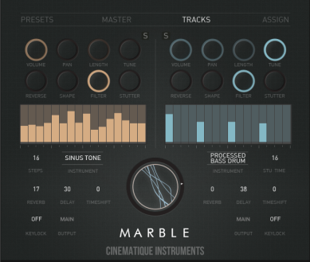
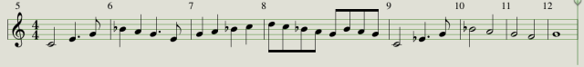
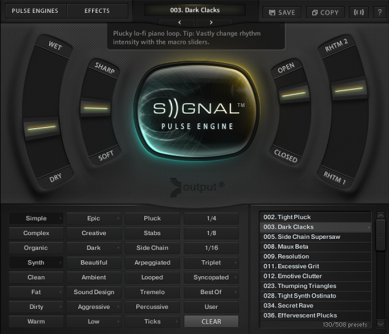
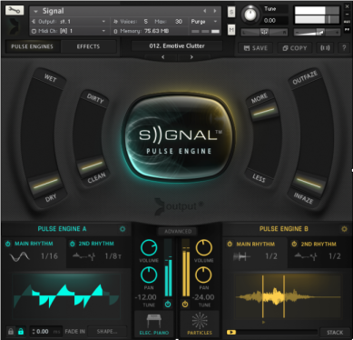
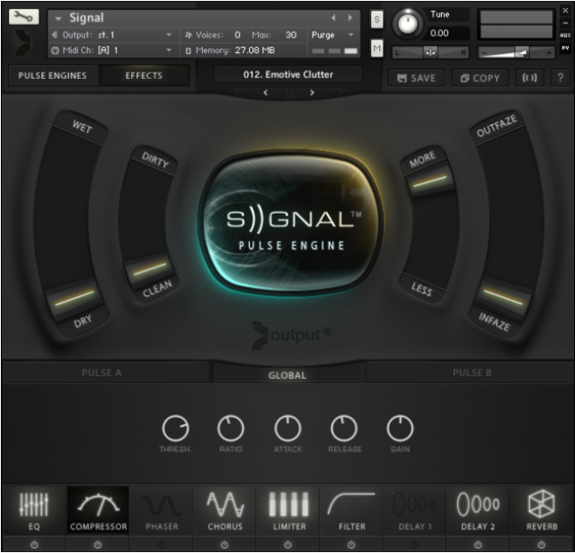

<?xml version="1.0" encoding="UTF-8"?><rss version="2.0"
	xmlns:content="http://purl.org/rss/1.0/modules/content/"
	xmlns:wfw="http://wellformedweb.org/CommentAPI/"
	xmlns:dc="http://purl.org/dc/elements/1.1/"
	xmlns:atom="http://www.w3.org/2005/Atom"
	xmlns:sy="http://purl.org/rss/1.0/modules/syndication/"
	xmlns:slash="http://purl.org/rss/1.0/modules/slash/"
	xmlns:itunes="http://www.itunes.com/dtds/podcast-1.0.dtd"
xmlns:rawvoice="http://www.rawvoice.com/rawvoiceRssModule/"
xmlns:googleplay="http://www.google.com/schemas/play-podcasts/1.0"

xmlns:georss="http://www.georss.org/georss" xmlns:geo="http://www.w3.org/2003/01/geo/wgs84_pos#"
>

<channel>
	<title>Spotlight ON &#8211; SCOREcastOnline.com</title>
	<atom:link href="." rel="self" type="application/rss+xml" />
	<link>http://www.scorecastonline.com</link>
	<description>Global Community for the Professional Media Composer</description>
	<lastBuildDate>
	Sun, 07 Apr 2019 10:06:34 +0000	</lastBuildDate>
	<language>en-US</language>
	<sy:updatePeriod>
	hourly	</sy:updatePeriod>
	<sy:updateFrequency>
	1	</sy:updateFrequency>
	<generator>https://wordpress.org/?v=5.1.1</generator>
<!-- podcast_generator="Blubrry PowerPress/7.4" mode="advanced" feedslug="feed" Blubrry PowerPress Podcasting plugin for WordPress (https://www.blubrry.com/powerpress/) -->
	<itunes:summary>Global Community for the Professional Media Composer</itunes:summary>
	<itunes:author>Spotlight ON &#8211; SCOREcastOnline.com</itunes:author>
	<itunes:image href="../../../wp-content/plugins/powerpress/itunes_default.jpg" />
	<itunes:subtitle>Global Community for the Professional Media Composer</itunes:subtitle>
	<image>
		<title>Spotlight ON &#8211; SCOREcastOnline.com</title>
		<url>../../../wp-content/uploads/powerpress/sig-SCO.jpg</url>
		<link>../</link>
	</image>
<site xmlns="com-wordpress:feed-additions:1">29563098</site>	<item>
		<title>REVIEW: EastWest Composer Cloud</title>
		<link>../../../2016/06/18/ewcloud/</link>
				<comments>../../../2016/06/18/ewcloud/#respond</comments>
				<pubDate>Sat, 18 Jun 2016 17:14:30 +0000</pubDate>
		<dc:creator><![CDATA[Stellita Loukas]]></dc:creator>
				<category><![CDATA[Product reviews]]></category>
		<category><![CDATA[ethnic]]></category>
		<category><![CDATA[gear]]></category>
		<category><![CDATA[sound design]]></category>
		<category><![CDATA[strings]]></category>
		<category><![CDATA[subscription]]></category>

		<guid isPermaLink="false">../../../?p=2290</guid>
				<description><![CDATA[A terrific solution for anyone looking to expand or cultivate a wide palette with just one purchase.]]></description>
								<content:encoded><![CDATA[<p><strong>COMPOSER CLOUD</strong> by <a href="http://soundsonline.com" target="_blank">Eastwest</a><br />
<strong>$29.99 &#8211; $49.99/month</strong></p>
<hr />
<p>EastWest is very well-known name in all composer households. Their ground-breaking EastWest Quantum Leap Symphony Orchestra was one of the first full-fledged orchestral sample libraries to be developed and still is one of the best entry-level libraries around.</p>
<p class="p1"><span class="s1">Since then, EastWest has continued to constantly innovate by presenting top-quality indispensable tools, spanning a large variety of styles. In 2015, EastWest introduced Composer Cloud and became the first sample library developer to offer a subscription plan for a sample-based product. </span></p>
<p class="p1"><span class="s1">While this new model was initially met with mixed responses across the composer community, more and more composers are signing up. So let’s take a look at what the Composer Cloud is and how it can enhance your daily work.</span></p>
<div class="page" title="Page 1">
<div class="layoutArea">
<div class="column">
<h2>General Overview</h2>
<div class="page" title="Page 1">
<div class="layoutArea">
<div class="column">
<p class="p1"><strong>HOW IT WORKS</strong></p>
<p class="p1"><span class="s1">The concept is rather simple really. All you need to do is download the EW Installation center from the Support section of the website. This requires you to sign into your personal EW account and as soon as the Installation Center is installed on your computer, all your previous purchases (before the introduction of the subscription model) and your current subscription are automatically reflected. </span></p>
<p class="p1"><span class="s1">The Installation Center conveniently manages everything pertaining to your EW libraries. It allows you to download, install, and activate any library you wish, it displays any updates available for your current EW software and it also allows you to relocate libraries should you choose to migrate them to another disk. </span></p>
<p class="p1"><span class="s1">A very pleasant surprise was the download speeds. Downloading almost all of the EW libraries took me just a few hours on a 50bpm DSL connection and the entire process was rather painless.</span></p>
<p class="p1"><span class="s1"><b>THE SUBSCRIPTION PLANS</b></span></p>
<p class="p1"><span class="s1">The introduction of Composer Cloud essentially gives a subscriber access to over 10,000 instruments for a yearly or monthly fee. All Composer cloud subscriptions include the entire EW catalog of libraries and the only difference is the different microphone positions included. </span></p>
<p class="p1"><span class="s1">The subscription model comes in 3 different versions : <em>Composer Cloud</em>, <em>Composer Cloud </em>X, and <em>Composer Cloud Plus</em>:</span></p>
<table style="height: 462px;" width="838" cellspacing="0" cellpadding="0">
<tbody>
<tr>
<td valign="top"></td>
<td valign="top">
<p style="text-align: center;"><span style="color: #000000; font-family: Helvetica; font-size: small;"><b>Composer Cloud</b></span></p>
</td>
<td valign="top">
<p style="text-align: center;"><span style="color: #000000; font-family: Helvetica; font-size: small;"><b>Composer Cloud X</b></span></p>
</td>
<td valign="top">
<p style="text-align: center;"><span style="color: #000000; font-family: Helvetica; font-size: small;"><b>Composer Cloud Plus</b></span></p>
</td>
</tr>
<tr>
<td valign="top"><span style="color: #000000; font-family: Helvetica; font-size: small;"><b>Cost</b></span></td>
<td valign="top">
<p align="center"><span style="color: #000000; font-family: Helvetica; font-size: small;">$29.99</span></p>
</td>
<td valign="top">
<p align="center"><span style="color: #000000; font-family: Helvetica; font-size: small;">$29.99</span></p>
</td>
<td valign="top">
<p align="center"><span style="color: #000000; font-family: Helvetica; font-size: small;">$49.99</span></p>
</td>
</tr>
<tr>
<td valign="top"><span style="color: #000000; font-family: Helvetica; font-size: small;"><b>Commitment</b></span></td>
<td valign="top">
<p align="center"><span style="color: #000000; font-family: Helvetica; font-size: small;">Monthly</span></p>
</td>
<td valign="top">
<p align="center"><span style="color: #000000; font-family: Helvetica; font-size: small;">Yearly (paid monthly)</span></p>
</td>
<td valign="top">
<p align="center"><span style="color: #000000; font-family: Helvetica; font-size: small;">Yearly (paid monthly)</span></p>
</td>
</tr>
<tr>
<td valign="top"><span style="color: #000000; font-family: Helvetica; font-size: small;"><b>No of Instruments</b></span></td>
<td valign="top">
<p align="center"><span style="color: #000000; font-family: Helvetica; font-size: small;">10,012</span></p>
</td>
<td valign="top">
<p align="center"><span style="color: #000000; font-family: Helvetica; font-size: small;">10,012</span></p>
</td>
<td valign="top">
<p align="center"><span style="color: #000000; font-family: Helvetica; font-size: small;">12,569</span></p>
</td>
</tr>
<tr>
<td valign="top"><span style="color: #000000; font-family: Helvetica; font-size: small;"><b>Mic Positions</b></span></td>
<td valign="top">
<p align="center"><span style="color: #000000; font-family: Helvetica; font-size: small;">1</span></p>
</td>
<td valign="top">
<p align="center"><span style="color: #000000; font-family: Helvetica; font-size: small;">2</span></p>
</td>
<td valign="top">
<p align="center"><span style="color: #000000; font-family: Helvetica; font-size: small;">ALL</span></p>
</td>
</tr>
<tr>
<td valign="top"><span style="color: #000000; font-family: Helvetica; font-size: small;"><b>Bit Depth</b></span></td>
<td valign="top">
<p align="center"><span style="color: #000000; font-family: Helvetica; font-size: small;">16 bit</span></p>
</td>
<td valign="top">
<p align="center"><span style="color: #000000; font-family: Helvetica; font-size: small;">16 bit</span></p>
</td>
<td valign="top">
<p align="center"><span style="color: #000000; font-family: Helvetica; font-size: small;">24 bit</span></p>
</td>
</tr>
<tr>
<td valign="top"><span style="color: #000000; font-family: Helvetica; font-size: small;"><b>Data Size</b></span></td>
<td valign="top">
<p align="center"><span style="color: #000000; font-family: Helvetica; font-size: small;">758 GB</span></p>
</td>
<td valign="top">
<p align="center"><span style="color: #000000; font-family: Helvetica; font-size: small;">~ 1TB</span></p>
</td>
<td valign="top">
<p align="center"><span style="color: #000000; font-family: Helvetica; font-size: small;">~ 1.8TB</span></p>
</td>
</tr>
<tr>
<td valign="top"><span style="color: #000000; font-family: Helvetica; font-size: small;"><b>Delivery</b></span></td>
<td valign="top">
<p align="center"><span style="color: #000000; font-family: Helvetica; font-size: small;">Download</span></p>
</td>
<td valign="top">
<p align="center"><span style="color: #000000; font-family: Helvetica; font-size: small;">Download</span></p>
</td>
<td valign="top">
<p align="center"><span style="color: #000000; font-family: Helvetica; font-size: small;">Hard Drive</span></p>
</td>
</tr>
</tbody>
</table>
<p class="p1"><span class="s1">If you are a student, you can also take advantage of the Composer Cloud Student, a monthly or yearly plan that costs $14.99 per month and includes 7 products of your choice. </span></p>
<p class="p1"><span class="s1">EW also offers the possibility to upgrade to a higher plan at any point in your subscription.</span></p>
<h2 class="p1">The PLAY Engine</h2>
<blockquote>
<p class="p1">&#8220;But… but… but… it relies on the PLAY Engine&#8221;</p>
</blockquote>
<p class="p1"><span class="s1">I know, I know. I must admit that I have had my fair share of troubles with the PLAY engine, but not so many that would stop me from enjoying the vast array of sound colors at my fingertips. PLAY is updated rather regularly and the EW support team is incredibly responsive and accommodating. Mr. Joey Medina was particularly helpful in setting me up and patiently answering any my questions.</span></p>
</div>
</div>
</div>
</div>
</div>
</div>
<div class="page" title="Page 4">
<div class="layoutArea">
<div class="column">
<h2>Performance</h2>
</div>
</div>
</div>
<div class="page" title="Page 5">
<div class="layoutArea">
<div class="column">
<p class="p1"><span class="s1">I took three months to test the basic Composer Cloud subscription in several different projects, including ones where time was absolutely of the essence. Although I am not using any SSDs for streaming my samples (just plain old 7200rpm drives), aside from a slightly increased loading time, everything worked well and the system was rather stable. </span></p>
<p class="p1"><span class="s1">Not having used any Hollywood products before I was very impressed by the very expressive quality of many of the instruments, especially the legato ones. Aside from all the very well-known libraries, all subscriptions include some lesser-known older libraries such as “56’ Stratocaster”, “Funky Ass Loops”, “Scoring Tools” and I was able to discover many hidden gems in there that are still extremely useful.</span></p>
<p class="p1"></p>
<h2>Final Observations</h2>
<p class="p1"><span class="s1">I can’t say that I will be using all 10,000 instruments in my work regularly but in my opinion, the Composer Cloud is definitely worth its money, especially now that they have introduced a month-to-month subscription. I think of it this way: very often we part with $300-$400 for a library which sounds amazing only to later find out that we can use maybe half of the patches as we imagined we would and the rest fall into obscurity. Well, spending the same amount of money for access to 10,000 instruments for an entire year (even if hypothetically we only used 5,000 of these) makes sense in my mind. Besides, new libraries are coming out every month and many sample libraries become obsolete after a few years (simply because realism is always taken to new levels with each new stride in technology). Instead of spending money on one library in perpetuity &#8211; which could become obsolete after a few years &#8211; I’d rather spend the same amount of money to ‘borrow’ 53+ of them for a year. This becomes relatively obvious when you consider that your needs often change as a composer. Your sampling arsenal could change drastically within a year just based on trends and musical tastes.</span></p>
<p class="p1">The EastWest Composer Cloud is a terrific solution for anyone looking to expand or cultivate a wide palette with just one purchase. As long as EastWest continues to innovate in the sampling market by adding products to their CC lineup over time, subscribing to this service could be a very wise move for anyone looking for the highest quality in sampled sounds.</p>
<hr />
<p class="p1"><strong>COMPOSER CLOUD</strong> by <a href="http://soundsonline.com" target="_blank">Eastwest</a><br />
<strong>$29.99 &#8211; $49.99/month</strong></p>
</div>
</div>
</div>
]]></content:encoded>
							<wfw:commentRss>../../../2016/06/18/ewcloud/feed/</wfw:commentRss>
		<slash:comments>0</slash:comments>
						<post-id xmlns="com-wordpress:feed-additions:1">2290</post-id>	</item>
		<item>
		<title>REVIEW: Marble by Cinematique Instruments</title>
		<link>../../../2016/03/30/marble/</link>
				<comments>../../../2016/03/30/marble/#respond</comments>
				<pubDate>Thu, 31 Mar 2016 06:28:59 +0000</pubDate>
		<dc:creator><![CDATA[Stellita Loukas]]></dc:creator>
				<category><![CDATA[Product reviews]]></category>
		<category><![CDATA[effects]]></category>
		<category><![CDATA[gear]]></category>
		<category><![CDATA[kontakt]]></category>
		<category><![CDATA[sound design]]></category>
		<category><![CDATA[strings]]></category>

		<guid isPermaLink="false">../../../?p=2280</guid>
				<description><![CDATA[For live and on-the-fly sound shaping that features well-recorded source material bundled with extensive effects options, Marble might be your new go-to tool.]]></description>
								<content:encoded><![CDATA[<p><strong>MARBLE</strong> by <a href="http://www.cinematique-instruments.com/page_marble.php" target="_blank">Cinematique Instruments</a><br />
<strong>240 €/ $270</strong></p>
<hr />
<p>&nbsp;</p>
<p>After releasing the <a href="../../../2016/01/11/ensemblia" target="_blank">Ensemblia</a> series last year, Germany-based developer <b><a href="http://cinematique-instruments.com/">Cinematique Instruments</a> </b>decided to switch gears and create a unique combination of their trademark traditional-meets-bizarre sounds with clever and innovative programming. The result was <strong>Marble</strong>.</p>
<div class="page" title="Page 1">
<div class="layoutArea">
<div class="column">
<p class="p1"><span class="s1">Marble is a KONTAKT-based library that runs on the full version of KONTAKT 5.3, comes with more than 800 presets, and is comprised of more than 2,500 samples.</span></p>
<h2>General Overview</h2>
<div class="page" title="Page 1">
<div class="layoutArea">
<div class="column">
<p class="p1"><span class="s1">At the core of <strong>Marble</strong> lie two parallel sound slots (called “Tracks”) equipped with their respective 16-step sequencers. But there is a twist; each of these two sequencers is completely ‘open’ &#8212; in other words, you can tweak every single one of the twelve parameters provided for each sound slot, individually for each of the 16 steps of the sequencer.</span></p>
<p class="p1"><span class="s1">One of the greatest values of this library is its flexibility and tweakability. Cinematique Instruments essentially provide us with a complex yet extremely intuitive and simple-to-use ‘system’ that allows us to combine any of the sixty-four sound sources in as many ways as our minds can imagine, sequence them and tweak each step of the sequence individually and, finally, manipulate everything in real time. </span></p>
<p class="p1"><span class="s1">The beauty of Marble lies at a single rotating ring that controls an entire effects matrix and which can allow you to shape your sound in real time. </span></p>
<p class="p1"><span class="s1"><b>THE GUI</b></span></p>
<p class="p1"><span class="s1">One of the first things I immediately loved about this library is the deceptively simple GUI. It is nicely designed and very neatly organized in a way that makes it easy to navigate. Everything is exactly where you expect it to be and you can create your own complex evolving sounds at the click of a button while being blissfully unaware of the complex mechanics and programming lying ‘behind the scenes’.  </span></p>
<p class="p1"><span class="s1">The entire <strong>Marble</strong> library is accessible via a single Kontakt-instrument patch that is organized into 4 tabs : </span></p>
<p class="p1"><span class="s1">1. The “PRESETS” tab allows you to choose any of the included 800 presets at the click of a button. Presets have been organized into categories and sub-categories that are sure to strike a cord with every modern composer, including Ambiences, Bass Lines, Sequences, Drum Beats, Rhythm Essentials and more.</span></p>
<p class="p1"><span class="s1">2. The “TRACKS” tab is where you can select a different sound source for each of the two “Tracks” and set the values for each of the two ‘open’ step sequencers. You can customize parameters such as velocity, note length, pan, tuning, shape, filter, LFO stutter, reverb, delay, time shifting and playing direction.</span></p>
<p class="p1"><span class="s1">3. The final sound/combination of the two tracks then passes through a complex effect matrix which you can customize and control in Real-Time through the “ASSIGN” tab. A 127-step sequencer allows you to easily assign parameter values for each of the onboard effects.</span></p>
<p class="p1"><span class="s1">4. Finally, the “MASTER” tab is where you can tweak your sound with a simple turning of the Marble ring (which is connected to the effects matrix at the “ASSIGN” tab), “Freeze” the sound if you wish to play along with the created sequence and set quantization and tempo parameters. </span></p>
<h2 class="p1">Malleability</h2>
<p class="p1">One thing Cinematique Instruments seems to have down really well is all the built-in ways you can mold and fashion their original sample sources into your own unique finished material sounds. With included sound sources such as drum kits, acoustic and electric basses, struck percussion, experimental string FX, woodwinds, classic synthesizers, skin percussions, glitch FX and electronic oddities galore, your possibilities are virtually endless. After you tweak to your heart&#8217;s delight, you can run the finished shape through <strong>Marble&#8217;s</strong> deep FX matrix. This process houses an extensive effects rack module, which includes low and high pass filters, face-ripping distortions, multi-band compression, randomizers, reverbs and more. By simply applying any one or combination of these parameters to your creation, Marble takes on a completely different vibe and enables you to throw your own voicings behind typically traditional instrument sources, making them perfect for video game music, trailer music production, film and TV work, or experimental media applications.</p>
<p class="p1">And…… all of this can happen in Real Time. If you are a live stage performer, this is a huge advantage that most sound libraries are slowly becoming hip to, but <strong>Marble</strong> gets exactly right directly out of the box. Every parameter is flexible on the fly and can be recorded with DAW automation for recall later on or real-time experimental performance – a major asset for the live player or experimental tweakhead composer.</p>
</div>
</div>
</div>
</div>
</div>
</div>
<div class="page" title="Page 4"></div>
<div class="page" title="Page 4">
<div class="layoutArea">
<div class="column">
<h2>Final Observations</h2>
</div>
</div>
</div>
<div class="page" title="Page 5">
<div class="layoutArea">
<div class="column">
<p class="p1"><span class="s1"><strong>Marble</strong> is a well-designed library that has clearly been created with a lot of forethought into how modern composers like to work and create. The sounds providing the raw material are top quality and have been recorded to Cinematique Instruments’ excellent standards. The ‘open’ 16-step sequencers offer a myriad of sonic possibilities and the fact that the effects matrix offers Real-Time dynamic sound shaping is, in my opinion, this library’s greatest asset. </span></p>
<p class="p1"><span class="s1"><strong>Marble</strong> is extremely playable and a lot of thought has evidently gone into creating a playable instrument that responds well to both chords and melodic lines, allowing users the freedom to create their own unique soundscapes via a simple and intuitive interface. </span></p>
<p class="p1"><span class="s1">Once again, Cinematique Instruments have created an excellent product that can easily find its way into any modern composer’s arsenal.</span></p>
<hr />
<p class="p1"><strong>MARBLE</strong> by <a href="http://www.cinematique-instruments.com/page_marble.php" target="_blank">Cinematique Instruments</a><br />
<strong>240 €/ $270</strong></p>
</div>
</div>
</div>
]]></content:encoded>
							<wfw:commentRss>../../../2016/03/30/marble/feed/</wfw:commentRss>
		<slash:comments>0</slash:comments>
						<post-id xmlns="com-wordpress:feed-additions:1">2280</post-id>	</item>
		<item>
		<title>REVIEW: Ensemblia by Cinematique Instruments</title>
		<link>../../../2016/01/11/ensemblia/</link>
				<comments>../../../2016/01/11/ensemblia/#respond</comments>
				<pubDate>Mon, 11 Jan 2016 23:16:36 +0000</pubDate>
		<dc:creator><![CDATA[Stellita Loukas]]></dc:creator>
				<category><![CDATA[Product reviews]]></category>
		<category><![CDATA[ethnic instruments]]></category>
		<category><![CDATA[gear]]></category>
		<category><![CDATA[kontakt]]></category>
		<category><![CDATA[orchestra]]></category>
		<category><![CDATA[sounds]]></category>
		<category><![CDATA[strings]]></category>

		<guid isPermaLink="false">../../../?p=2271</guid>
				<description><![CDATA[There are many libraries out there that do the ‘big’ sound incredibly well, but what happens when your cue demands a smaller, more intimate sound? Introducing… Ensemblia.]]></description>
								<content:encoded><![CDATA[<p><strong>ENSEMBLIA</strong> by <a href="http://cinematique-instruments.com/page_ensemblia15.php" target="_blank">Cinematique Instruments</a><br />
<strong>219 €/ $245</strong></p>
<p><strong>METALLIQUE</strong><br />
<strong>115 €/ $129</strong></p>
<p><strong>STRINGED</strong><br />
<strong>115 €/ $129</strong></p>
<hr />
<div class="page" title="Page 1">
<div class="layoutArea">
<div class="column">
<p><span class="s1"><a href="http://cinematique-instruments.com/"><b>Cinematique Instruments</b></a></span><span class="s2"> is a Germany-based developer of unique, odd and rare sample libraries. Comprising of a group of composers/producers, the Cinematique Instruments team is highly attuned to the needs of the modern composer and manages to continuously come up with unconventional yet highly usable libraries.</span></p>
<p class="p1"><span class="s2">Their latest flagship product, <a href="http://cinematique-instruments.com/page_ensemblia15.php" target="_blank">Ensemblia</a>, is a unique combination of traditional orchestral and rare modern instruments that is aiming to recreate the sound of the modern chamber orchestra and provide composers with an intuitive tool to create natural-sounding productions.</span></p>
<p class="p1"><span class="s2">Ensemblia is a KONTAKT-based library that runs on the full version of both KONTAKT 4 and 5 and has recently been updated to version 1.5, adding tons of new features and new instruments. What’s more, following the success of the original Ensemblia library, the Cinematique Instruments team is about to release two further variations, Metallique and Stringed. </span></p>
<p class="p1"><span class="s2">So let’s take a look at what this ‘trio’ can add to your arsenal!</span></p>
<h2>General Overview</h2>
<div class="page" title="Page 1">
<div class="layoutArea">
<div class="column">
<p class="p1"><span class="s1">The original library comes with a wealth of sonic colors, from classical orchestral and mallet instruments to odd synths and bowed guitars. But the real beauty of Ensemblia, where all sounds come truly alive, is in the clever Kontakt patch programming. </span></p>
<p class="p1"><span class="s1">The entire library is organized in just two patches: Longs and Shorts. The large variety of presets available are accessed via the well thought-out user interface. </span></p>
<p class="p1"><span class="s1"><b>Longs</b></span></p>
<p class="p1"><span class="s1">The Longs patch allows you to load up to 7 different instruments, each on a dedicated channel strip that gives you individual control over the volume, panning, reverb, and transposition. The magic, however, lies in the Voicing section where you can determine how each chord you play on the keyboard is distributed to the loaded instruments. For example, you can load all four orchestral strings, each on its individual slot, and instruct Ensemblia to assign the lowest note of your chords to the bass, the highest to the violin and the middle ones to the viola and cello.</span></p>
<p class="p1"><span class="s1">As if this isn’t clever enough, the &#8216;Longs&#8217; patch has been programmed in such a way so as to automatically recognize where to assign each new note you play, based on its distance from the previous notes. If, for example, you have a Csus4 chord and the F is assigned to the viola, when you move to a C triad, the E will automatically be played by the viola, too!</span></p>
<p class="p1"><span class="s1">While you are free to mix and match the available instruments to your heart’s delight, the CI team has provided a wealth of presets neatly organized into intuitive categories, to suit all tastes.</span></p>
<p class="p1"></p>
<p class="p1"><span class="s1"><b>Shorts</b></span></p>
<p class="p1"><span class="s1">The Shorts patch is excellent for rhythmic figures and ostinato and works in the exact same way (7 instrument slots with individual controls) but it also features an “Arranger” page that allows you to program the exact rhythm each instrument is playing. The presets provided are again well thought-out and neatly organized and can give you anything from dark and frantic to light and atmospheric. </span></p>
<p class="p1"><span class="s1">In both patches, a comprehensive “Mixer” section allows you to shape your sound to taste and make it as subtle or as overpowering as you wish!</span></p>
<p class="p1"></p>
</div>
</div>
</div>
</div>
</div>
</div>
<div class="page" title="Page 1">
<div class="layoutArea">
<div class="column">
<p>&nbsp;</p>
<h2>Ensemblia &#8220;<span class="s1"><b>Metallique&#8221;</b></span></h2>
</div>
</div>
</div>
<div class="page" title="Page 4">
<div class="layoutArea">
<div class="column">
<p class="p1"><span class="s1">Based on the same principles as the original Ensemblia library, Ensemblia Metallique comprises of a large range of metallic mallet instruments (anything and everything from vibraphone to a salad bowl!), all accessible via a “Shorts” patch which allows you to mix and match instruments, program your own rhythms and further shape your sound via the Mixer section.</span></p>
<p class="p1"></p>
<h2 class="p1">Ensemblia &#8220;Stringed&#8221;</h2>
<p class="p1"><span class="s1">The Stringed variation of Ensemblia brings together all the rare and odd string instruments the CI team has ever recorded: autoharp, monochord, kantele, lute, hammered dulcimer, zither and many more. Since these are mostly plucked instruments, Ensemblia Stringed comprises of just the “Shorts” patch, but this is enough to satisfy even the most demanding tastes.</span></p>
<p class="p1"></p>
<p class="p3">
</div>
</div>
</div>
<div class="page" title="Page 4">
<div class="layoutArea">
<div class="column">
<h2></h2>
<h2>Final Observations</h2>
</div>
</div>
</div>
<div class="page" title="Page 5">
<div class="layoutArea">
<div class="column">
<p class="p1"><span class="s1">There is an unwritten rule-of-thumb that the smaller the ensemble you are composing/orchestrating for the more careful you have to be when choosing voicings, voice leading, doublings, etc. This is one of the reasons why it is said that writing for a string quartet, for example, is much harder than writing for a full string orchestra. </span></p>
<p class="p1"><span class="s1">The same is true for sample libraries — large and ‘epic’ ensembles are often easier to make sound realistic but small and intimate are harder. There are many libraries out there that do the ‘big’ sound incredibly well, but what happens when your cue demands a smaller, more intimate sound? </span></p>
<p class="p1"><span class="s1">This is where Ensemblia excels. It is a library that has clearly been designed with the modern composer in mind. It comes to fill a ‘void’ in the sample library market and it does so incredibly well. Ensemblia offers a large variety of sonic possibilities in an extremely well recorded and programmed package. Added with its beautiful interface, and you have an easy to find your way around the library and create the exact sound you are after. </span></p>
</div>
</div>
</div>
<hr />
<p><strong>ENSEMBLIA</strong> by <a href="http://cinematique-instruments.com/page_ensemblia15.php" target="_blank">Cinematique Instruments</a><br />
<strong>219 €/ $245</strong></p>
<p><strong>METALLIQUE</strong><br />
<strong>115 €/ $129</strong></p>
<p><strong>STRINGED</strong><br />
<strong>115 €/ $129</strong></p>
]]></content:encoded>
							<wfw:commentRss>../../../2016/01/11/ensemblia/feed/</wfw:commentRss>
		<slash:comments>0</slash:comments>
						<post-id xmlns="com-wordpress:feed-additions:1">2271</post-id>	</item>
		<item>
		<title>REVIEW: SkiSwitcher 2 by Peter Schwartz</title>
		<link>../../../2015/11/29/skiswitcher2/</link>
				<comments>../../../2015/11/29/skiswitcher2/#respond</comments>
				<pubDate>Mon, 30 Nov 2015 01:16:43 +0000</pubDate>
		<dc:creator><![CDATA[Stellita Loukas]]></dc:creator>
				<category><![CDATA[Product reviews]]></category>
		<category><![CDATA[gear]]></category>
		<category><![CDATA[logic]]></category>
		<category><![CDATA[scripting]]></category>
		<category><![CDATA[utilities]]></category>

		<guid isPermaLink="false">../../../?p=2254</guid>
				<description><![CDATA[Modern composers are spending less time composing music and increasingly more time programming MIDI data. Ski Switcher 2 makes that process much easier and certainly far less painful.]]></description>
								<content:encoded><![CDATA[<p><strong>SKI SWITCHER 2</strong> for Logic X by Peter Schwartz<br />
<strong>$49.00<br />
</strong>Purchase SKI SWITCHER and get more information at <a href="http://www.skiswitcher.com/">SkiSwitcher.com</a></p>
<hr />
<div class="page" title="Page 1">
<div class="layoutArea">
<div class="column">
<p><span class="s1">If you are a Logic user, chances are you’ve come across the username “Ski” at one of the numerous online Logic forums. Ski (a.k.a <a href="http://www.peterschwartzmusic.com"><span class="s2">Peter Schwartz</span></a>) is a composer, orchestrator, and arranger whose long and impressive career has allowed him to work with artists such as Madonna, Michael Jackson, David Bowie, Mariah Carey and Pet Shop Boys to name a few, and his scoring clients include Disneytoons, Mattel, FOX, Warner Bros and many more. Peter Schwartz is also one of MacProVideo’s most pre-eminent <a href="https://www.macprovideo.com/about/trainers/peterschwartz"><span class="s2">Logic Pro instructors</span></a> and has produced Logic-oriented courses in MIDI Orchestration, Template Building and Score Editing. </span></p>
<p class="p1"><span class="s1">Throughout all his musical escapades for the past 25+ years Ski has been loyal to Logic<span class="Apple-converted-space"> </span>and is one of the few people on this planet who actually really know Logic inside-out. Thriving to always improve his workflow and make the best out of Logic, Ski has listened to all of our prayers and created something that can be easily called the equivalent of “VST Expression Maps” for Logic Pro. </span></p>
<h2>General Overview</h2>
<div class="page" title="Page 1">
<div class="layoutArea">
<div class="column">
<p class="p1"><span class="s1">Peter developed his original version of SkiSwitcher in 2008 out of frustration that keyswitching patches didn&#8217;t always play back with the correct articulation. This is a problem you’re probably familiar with, too! Though the original version of the system solved this problem, the newly-introduced scripting capabilities of Logic Pro X allowed him to both simplify its operation and greatly expand its capabilities beyond just working with keyswitching patches.</span></p>
<p class="p1"><span class="s1">SkiSwitcher2 is an articulation switching system that allows you compose and produce music without having to worry about: </span></p>
<ul>
<ul>
<li class="li1"><span class="s1">learning the keyswitches of each different library you own;</span></li>
<li class="li1"><span class="s1">navigating a project with 300+ tracks because you need to host each articulation on a different track; </span></li>
<li class="li1"><span class="s1">having to play your work back from a specific point because keyswitches don’t ‘chase’;</span></li>
<li class="li1"><span class="s1">having to spend hours to ‘clean up’ your project in order to print out a usable score after you’ve already spent hours composing the actual music.</span></li>
</ul>
</ul>
</div>
</div>
</div>
</div>
</div>
</div>
<h2>Key Features</h2>
<div class="page" title="Page 1">
<div class="layoutArea">
<div class="column">
<p class="p1"><span class="s1">So let’s look at what SkiSwitcher2 can actually do for you: </span></p>
<ol class="ol1">
<ol class="ol1">
<li class="li1"><span class="s3"><strong>Intelligent Keyswitching</strong>: </span><span class="s1">When using a keyswitch patch (e.g. CS2, EWQL keyswitch patches etc), you usually need to be very careful when playing back your work because keyswitch notes don’t work if they are not included within the playback passage. With SkiSwitcher2, the notes of your music select their own articulations. In other words, information about the appropriate articulation is ‘embedded’ into each note and no matter where in the timeline you choose to playback your work from, all notes will play back using the correct articulations.</span></li>
<li class="li1"><span class="s3"><strong>Polyphonic Keyswitching</strong>: </span><span class="s1">With SkiSwitcher2 you can play chords and set each chord note to play back using a different articulation. </span></li>
<li class="li1"><span class="s3"><strong>Articulation Name Display</strong>: </span><span class="s1">SkiSwitcher2 not only allows you to enter a specific label for each articulation you use but it also displays the articulation name in real time. This way, you no longer have to play the guessing game when playing a line with a keyswitching patch; you know exactly what you are playing every single moment.</span></li>
<li class="li1"><span class="s3"><strong>Taming the track-count beast</strong>: </span><span class="s1">Let’s face it; having to scroll through five screens’ worth of tracks while riding the inspiration wave is not very productive. Non-keyswitching libraries (e.g. LASS, some EWQL libraries etc) dictate that you have to use 1 track per articulation thus significantly increasing your track count. SkiSwitcher2 offers you a way to combine up to 16 different articulations into a single track, essentially allowing you to treat a multi-timbral plugin like Play or KONTAKT as a single keyswitching patch. How cool is that? </span></li>
<li class="li1"><span class="s3"><strong>Hybrid Instruments</strong>: </span><span class="s1">These are special a special kind of instrument setup that let you override articulations that you don’t use in keyswitching patches and ‘replace’ them with individual articulations from other patches.</span></li>
<li class="li1"><span class="s3"><strong>Consistent Keyswitches</strong>: </span><span class="s1">Having to learn the keyswitches of each different library you use is daunting to say the least. SkiSwitcher2 provides a solution to this problem, too, by allowing you set a universal key range as your keyswitching range and apply this to every library you use. Additionally, if you have a 2nd keyboard lying around, you can easily incorporate this into your setup and use it for keyswitching purposes.</span></li>
<li class="li1"><span class="s3"><strong>Easy Score creation</strong>: </span><span class="s1">Since you no longer have to include keyswitch notes in your MIDI regions, score creation becomes a much easier and more straight-forward affair.</span></li>
</ol>
</ol>
<p>&nbsp;</p>
<h2>Installation</h2>
</div>
</div>
</div>
<div class="page" title="Page 4">
<div class="layoutArea">
<div class="column">
<div id="attachment_2256" style="width: 399px" class="wp-caption alignright"><p id="caption-attachment-2256" class="wp-caption-text">fig. 1: Installation</p></div>
<p class="p1"><span class="s1">Before we move on, let me clarify that although I’ve been using Logic since early 2009, I was completely and utterly unfamiliar with anything Script-like until getting my hands on SkiSwitcher2. If you are a script-newbie like myself, you are in good hands because Peter Schwartz has gone to great lengths to make make sure the Scripter can be configured entirely from its front panel, and that end-users never have to do any coding.</span></p>
<p class="p1"><span class="s1">SkiSwitcher2 comes in a neatly organized folder, including everything you need to get up and running in no time: </span></p>
<ul>
<li class="li1"><span class="s1">A video installation guide that takes you through the process step-by-step.</span></li>
<li class="li1"><span class="s1">Three different PDF documents explaining everything about how SkiSwitcher2 works, how to make it work for you and offering tips and tricks on how to actually implement it into your own setup. </span></li>
<li class="li1"><span class="s1">The SkiSwitcher2 logic project file that you need to open in order to obtain the SkiSwitcher2 script; and</span></li>
<li class="li1"><span class="s1">A “CC Cloner” KONTAKT preset file to help you set up SkiSwitcher2 with KONTAKT-based libraries. </span></li>
</ul>
<p class="p1"><span class="s1">Following the instructions outlined in the installation guide video I was able to install SkiSwitcher2 easily and without any problems whatsoever.</span></p>
<h2 class="p1">In Action</h2>
<p class="p1"><span class="s1">Since I am hosting all my libraries on a separate slave PC, Vienna Ensemble Pro is a key ingredient in my workflow and I was anxious to see how SkiSwitcher2 would work in this<span class="Apple-converted-space"> </span>slightly complicated setup. </span></p>
<p class="p1"><span class="s1">Below, I will explore how SkiSwitcher2 worked in three different situations: with keyswitching patches, with multi-timbral instruments and when incorporated into an existing template.</span></p>
<p class="p3"><strong><span class="s1">I. SKISWITCHER2 AND KEYSWITCHING PATCHES</span></strong></p>
<p class="p1"><span class="s1">Setting up SkiSwitcher2 with a keyswitching patch took me all of 5 minutes. After having installed SkiSwitcher2 as per the Installation video’s instructions, I loaded a violin keyswitching patch from EWQL Symphony Orchestral library (18V KS Master) and loaded the Scripter plugin in Logic, with the appropriate SkiSwitcher2 preset. </span></p>
<div id="attachment_2257" style="width: 313px" class="wp-caption alignleft"><p id="caption-attachment-2257" class="wp-caption-text">fig 2: Scripter</p></div>
<p class="p1"><span class="s1">Since SkiSwitcher2 offers real-time articulation display, I spent a couple of minutes entering all the articulation names included in the 18V KS Master patch.<span class="Apple-converted-space">  </span></span></p>
<p class="p1"><span class="s1">Then, it was just a matter of playing the melody with my right hand and the articulations on the left. </span></p>
<p class="p1"><span class="s1">Each articulation I played was neatly<span class="Apple-converted-space"> </span>displayed on the Scripter interface. Since PLAY is hosted on an external slave PC, this was extremely useful because it eliminated my need to constantly look at a second screen to see what articulation I am playing.</span></p>
<p class="p1"><span class="s1">The resulting MIDI region simply included the melody notes and absolutely no keyswitching notes. Every bit of information needed to trigger the correct articulation was embedded into the notes themselves, via the MIDI channel. If you look at the event list of the MIDI region, you’ll see the MIDI channels changing to reflect the different articulations I was triggering at each<span class="Apple-converted-space"> </span>point. </span></p>
<p class="p1"><span class="s1">Figure 3 shows how the score would look:</span></p>
<div id="attachment_2259" style="width: 630px" class="wp-caption alignleft"><p id="caption-attachment-2259" class="wp-caption-text">fig 3: Score output</p></div>
<p class="p1"><span class="s1">This phrase goes through 7 articulation changes and there are absolutely NO keyswitches present in the score! </span></p>
<p class="p1"><span class="s1">Needless to say that when I played it back, all parts played correctly and absolutely no note-chasing was needed. </span></p>
<p class="p3"><strong><span class="s1">II. SKISWITCHER2 AND MULTI-TIMBRAL PLUGINS </span></strong></p>
<p class="p1"><span class="s1">Setting up SkiSwitcher2 with a multi-timbral instance took me 10 minutes, including the 4 minutes I spent brewing a new cup of coffee!</span></p>
<p class="p1"><span class="s1">After loading 7 different LASS 2 lite Violin I articulations in a single KONTAKT instance, I loaded SkiSwitcher2 and this time I selected the “Multi-Timbral” option. </span></p>
<p class="p1"><span class="s1">This works in the exact same way as described in the previous version. The only difference is that the different channels now represent different patches loaded in the instrument plugin and not keyswitches present in the same patch. </span></p>
<p class="p1"><span class="s1">To take it a step further, SkiSwitcher 2 allows the creation of a special kind of instruments, the so-called “</span><span class="s2">Hybrid</span><span class="s1">” instruments. </span></p>
<p class="p1"><span class="s1">Imagine this: there is a specific keyswitching patch from EWQL Orchestra that you absolutely love but you find the legatos a tad lacking. What you can now do with the help of SkiSwitcher2 is load this keyswitching patch and then not only override (i.e. exclude) the articulations you don’t like (i.e. the legato) but also use another patch in their place essentially creating a hybrid instrument comprising of different patches even from different libraries!</span></p>
<p class="p3"><strong><span class="s1">III. SKISWITCHER2 AND POLYPHONIC KEYSWITCHING </span></strong></p>
<div id="attachment_2261" style="width: 399px" class="wp-caption alignright"><p id="caption-attachment-2261" class="wp-caption-text">fig 4: Event List</p></div>
<p class="p1"><span class="s1">Here’s where things start to get </span><span class="s2">really</span><span class="s1"> interesting. SkiSwitcher2 allows you to play chords and then assign a different articulation to each note of the chord.</span></p>
<p class="p1"><span class="s1">This can work in either the Keyswitching or Multi-Timbral patch type and all you have to do is play your chords and then assign the correct channel using the Event List. </span></p>
<p class="p1"><span class="s1">Figure 4 shows two chords C and G/D: The root of the first chord is assigned to channel 1 and plays the legato articulation as expected. The E is assigned to channel 2 and plays a trill legato patch and the G which is held during both chords plays a tremolo legato patch. </span></p>
<p class="p1"><span class="s1">This approach could also be extremely helpful if you wanted to quickly assign a MIDI region played with a Strings Ensemble patch, to the individual string sections. Simply create an instance of your plugin with Violins 1 = channel 1, Violins 2 = channel 2, Violas = channel 3 etc and assign each note to the section you wish to be played by.</span></p>
<p class="p3"><strong><span class="s1">IV. THE CC CLONER</span></strong></p>
<p class="p1"><span class="s1">Last but not least, Schwartz has made sure to include an intuitive way to handle CC messages in SkiSwitcher2. We all know that without our CC11 faders and modulation wheels, we<span class="Apple-converted-space"> </span>cannot possibly imagine creating a realistic MIDI orchestration. </span></p>
<p class="p1"><span class="s1">Using a component called “CC Cloner” (included in the SkiSwitcher2 download),<span class="Apple-converted-space"> </span>you can now choose to ‘clone’ the CC messages recorded on the first channel of the keyswitching or multi-timbral instrument, to all the rest of the channels. </span></p>
<div id="attachment_2262" style="width: 351px" class="wp-caption aligncenter"><p id="caption-attachment-2262" class="wp-caption-text">fig. 5: CC Cloner</p></div>
<p class="p1"><span class="s1">For example, say I have a KONTAKT instance loaded with 7 different articulations of LASS 2 Lite Violin I patches. It goes without saying that I want the modulation and expression messages I record to affect all 7 articulations. In order to do that, Peter has provided us with 2 choices: </span></p>
<ol class="ol1">
<ol class="ol1">
<li class="li1"><span class="s1">The KONTAKT-based CC Cloner: a custom script you can load from within KONTAKT 4 or 5 and</span></li>
<li class="li1"><span class="s1">The Scripted-Based CC Cloner: a custom script loaded directly inside Logic via the Logic Scripter</span></li>
</ol>
</ol>
</div>
</div>
</div>
<div class="page" title="Page 4">
<div class="layoutArea">
<div class="column">
<h2>Final Observations</h2>
</div>
</div>
</div>
<div class="page" title="Page 5">
<div class="layoutArea">
<div class="column">
<p class="p1"><span class="s1">Modern composers are forced to spend less and less time composing music and more and more time programming and ‘massaging’ MIDI data in order to meet the continuously climbing standards of MIDI production. </span></p>
<p class="p1"><span class="s1">SkiSwitcher2 offers a way to simplify our lives and help us focus more on what we need to be doing. Writing music. </span></p>
<p class="p1"><span class="s1">I have been using this marvel for about a month now (both in large orchestral templates and smaller projects) and it is working without any problems whatsoever. The documentation and video demonstrations were great in helping me understand how to install and use it and Peter Schwartz has one of the best after-sales services I’ve seen to date, always willing to help, answer questions and suggest solutions.</span></p>
<p class="p1"><span class="s1">The only thing that SkiSwitcher2 can’t do for you at its current version is brew coffee. But, given that Peter is always open to suggestions and feature requests, you never know…</span></p>
<p class="p1"><span class="s1">Oh, and at $49 it’s an absolute steal.</span></p>
</div>
</div>
</div>
<hr />
<p><strong>SKI SWITCHER 2</strong> by Peter Schwartz<br />
<strong>$49.00</strong><strong><br />
</strong>Purchase SKI SWITCHER and get more information at <a href="http://www.skiswitcher.com/">SkiSwitcher.com</a></p>
]]></content:encoded>
							<wfw:commentRss>../../../2015/11/29/skiswitcher2/feed/</wfw:commentRss>
		<slash:comments>0</slash:comments>
						<post-id xmlns="com-wordpress:feed-additions:1">2254</post-id>	</item>
		<item>
		<title>SPOTLIGHT ON: Output&#8217;s SIGNAL</title>
		<link>../../../2015/09/14/spotlight-on-output-signal/</link>
				<comments>../../../2015/09/14/spotlight-on-output-signal/#respond</comments>
				<pubDate>Mon, 14 Sep 2015 23:42:36 +0000</pubDate>
		<dc:creator><![CDATA[Eanan Patterson]]></dc:creator>
				<category><![CDATA[Spotlight ON]]></category>
		<category><![CDATA[design]]></category>
		<category><![CDATA[gear]]></category>
		<category><![CDATA[kontakt]]></category>
		<category><![CDATA[library]]></category>
		<category><![CDATA[pulse]]></category>
		<category><![CDATA[sample]]></category>
		<category><![CDATA[sound]]></category>

		<guid isPermaLink="false">../../../?p=2250</guid>
				<description><![CDATA[In this episode of SPOTLIGHT ON edition, Éanán and Stellita take a comprehensive journey through the inner workings of Output's new pulsating monster - SIGNAL.]]></description>
								<content:encoded><![CDATA[<p>In this brand new edition of SCOREcast&#8217;s SPOTLIGHT ON, Éanán Paterson and Stellita Loukas bring you along on a deep dive through Output&#8217;s newest flagship product SIGNAL — a beast of a library driven by two independent pulse engines — that will breathe new life and glorious color into your music.</p>
<p>For more information and to purchase, please visit the <a href="http://outputsounds.com/products/signal/" target="_blank">OUTPUT</a> website.</p>
<p>If you cannot see the video below, please click <a href="https://youtu.be/qgET9k49_cw" target="_blank">here</a>.</p>
<p><iframe src="//www.youtube.com/embed/qgET9k49_cw" width="560" height="315" frameborder="0" allowfullscreen="allowfullscreen"></iframe></p>
]]></content:encoded>
							<wfw:commentRss>../../../2015/09/14/spotlight-on-output-signal/feed/</wfw:commentRss>
		<slash:comments>0</slash:comments>
						<post-id xmlns="com-wordpress:feed-additions:1">2250</post-id>	</item>
		<item>
		<title>REVIEW: SIGNAL Pulse Engine by Output</title>
		<link>../../../2015/04/01/review-signal-by-output/</link>
				<comments>../../../2015/04/01/review-signal-by-output/#respond</comments>
				<pubDate>Wed, 01 Apr 2015 09:30:40 +0000</pubDate>
		<dc:creator><![CDATA[Ryan Scully]]></dc:creator>
				<category><![CDATA[Product reviews]]></category>
		<category><![CDATA[gear]]></category>
		<category><![CDATA[kontakt]]></category>
		<category><![CDATA[library]]></category>
		<category><![CDATA[sample libraries]]></category>

		<guid isPermaLink="false">../../../?p=2228</guid>
				<description><![CDATA[Output's SIGNAL combines the warmth of analog and aggressive synthesis with an immense collection of organic, sampled instruments… and blows the roof off yet another genre.]]></description>
								<content:encoded><![CDATA[<p><strong>SIGNAL</strong> Pulse Engine by Output<br />
<strong>$199.00</strong> (SIGNAL); <strong>$348.00</strong> (SIGNAL + REV Bundle, save $50)<strong><br />
</strong>Purchase SIGNAL and get more information at <a href="http://outputsounds.com/products/signal/" target="_blank">Outputsounds.com</a></p>
<hr />
<div class="page" title="Page 1">
<div class="layoutArea">
<div class="column">
<p><a href="http://outputsounds.com"></a></p>
<p class="p1"><span class="s1"><a href="http://outputsounds.com" target="_blank">Output</a> first came on the sample library scene nearly a year and a half ago with their groundbreaking and highly acclaimed release REV (<a title="REVIEW: REV by Output" href="../../../2013/11/20/review-rev-by-output" target="_blank">SCOREcast review here</a>). The library was so forward thinking with such an unorthodox concept that many have wondered how they could possibly follow up that release.</span></p>
<p class="p1"><span class="s1">The answer comes in the form of their brand new pulse-driven sample library: <b>SIGNAL</b>.</span></p>
<p class="p1"><span class="s1">SIGNAL<b> </b>combines the warmth of analog and aggressive synthesis with an immense collection of organic, sampled instruments, but the true lure of the library rests with the inclusion of its “Pulse Engine”, which allows for up to four independent, tempo-locking rhythms across two separate sound source layers to create that “heartbeat” at the center of your track.</span></p>
<p class="p1"><span class="s1">We will take a detailed look at the library from the ground up to see what’s included, how it operates and ultimately what it will add to your existing sample library arsenal.</span></p>
<h2>General Overview</h2>
<div class="page" title="Page 1">
<div class="layoutArea">
<div class="column">
<p class="p1"><span class="s1">SIGNAL<b> </b>requires Kontakt 5.3.1 or higher and is compatible with the Kontakt Free Player. The library is immense, weighing in at around 40GB. Output utilizes the <a title="Continuata Utility" href="http://www.continuata.com/" target="_blank">Continuata Connect Download Utility</a> and I personally had a smooth and swift download of the content.<span class="Apple-converted-space">  </span>The library will need to be activated within the Native Instruments Service Center before it will become available within the library pane of your Kontakt browser.</span></p>
<p class="p1"><span class="s1">Before unpacking this beast, let&#8217;s look at a quick listing of everything included in the library as well as its features:</span></p>
<ul>
<li class="p1">500 Pulse Instruments for instant playability</li>
<li class="p1">40GB of content, including analog synths, digital synths and organic instruments</li>
<li class="p1">Up to four separate pulses at one time</li>
<li class="p1">All pulses lock to tempo</li>
<li class="p1">Rhythms: Looper, Step Sequencers, Arpeggiators, LFO’s</li>
<li class="p1">Four central MACRO sliders unique to each of the 500 Pulse Instruments</li>
<li class="p1">Effects can control global parameters and individual layers</li>
<li class="p1">Convolution reverb engine</li>
<li class="p1">Advanced mode for access to all parameters</li>
<li class="p1">Copy and paste settings between layers</li>
<li class="p1">Smart tagging preset menu</li>
<li class="p1">Simple design and ease of use</li>
</ul>
</div>
</div>
</div>
</div>
</div>
</div>
<h2>The Preset Browser</h2>
<div class="page" title="Page 1">
<div class="layoutArea">
<div class="column">
<div id="attachment_2231" style="width: 399px" class="wp-caption alignleft"><a href="http://outputsounds.com"></a><p id="caption-attachment-2231" class="wp-caption-text">Preset Browser</p></div>
<p class="p1"><span class="s1">SIGNAL<b> </b>contains just one patch in the instruments folder by which all the contents of the library can be accessed, which I think it is a brilliant layout. The developer recommends (and I agree) that you access the “preset” browser page first when initially diving into the library. This can be accessed by simply clicking on any preset name (e.g. &#8220;Dark Clacks&#8221;, pictured above) from the main page. The browser is laid out in a familiar, yet very welcomed format; simply click on one (or many) of the “smart tags” in the left-side palette and the right window pane will provide a listing of compatible instruments, based on your choices.</span></p>
<p class="p1"><span class="s1">There are five hundred — That&#8217;s right… 500! — different instruments in SIGNAL<b> </b>and<b> </b>I couldn’t have asked for a better way to audition them than the way this browser is constructed.</span></p>
<p class="p1"><span class="s1">So how does it sound on a first play through?<span class="Apple-converted-space">  </span>I clicked on “Epic” and “Organic” and chose the patch “Sun King” from the browser – I played a three-note D minor triad and heard a deep, gritty, pulsating arpeggiated figure with two intersecting polyrhythms. Awesome. I proceeded to get lost over the next hour sampling various different instruments from the browser and the immediate attention to the production value and execution of the patches were very impressive.</span></p>
<p><center><iframe src="//www.youtube.com/embed/_Htvz6KwHjQ" width="560" height="315" frameborder="0" allowfullscreen="allowfullscreen"></iframe></center></p>
<p class="p1"><span class="s1">Let’s move over to the “Pulse Engines” page to get under the hood and see what SIGNAL reveals…</span></p>
</div>
</div>
</div>
<h2>The Pulse Engines</h2>
<div class="page" title="Page 2">
<div class="layoutArea">
<div class="column">
<div id="attachment_2233" style="width: 399px" class="wp-caption alignright"><a href="http://outputsounds.com"></a><p id="caption-attachment-2233" class="wp-caption-text">Pulse Engines</p></div>
<p class="p1"><span class="s1">The true heart of SIGNAL rests within its “Pulse Engines” page. At first glance the layout may seem daunting and complex, but Output has made the source audio flow so intuitively that you’ll want to dig deeper and deeper at the sounds and the engine’s capability.</span></p>
<p class="p1"><span class="s1">SIGNAL<b> </b>gives you two separate sound sources that can be loaded and played in unison. Simply clicking on the “Signal Pulse Engines” window in the middle of the page will disable the pulse engine, leaving just the sound sources by themselves. Each sound source has it’s own channel strip  and when you click on the instrument picture/name it will open the sound source browser. There is an immense collection of synths and organic instruments in the browser that can be quickly loaded into the existing patch. This is a fantastic addition as you can quickly tryout new sounds in your loaded instrument that may mesh even better to your ears than before. Don’t want the “Sub Sine”? Why not load up a deep sampled “Muted Guitar” and see how that sounds? The possibilities are endless. </span></p>
<p class="p1"><span class="s1"> Let’s focus on <em>Pulse Engine A</em> for now (<em>Pulse Engine B</em> has all the functionality identical to Pulse Engine A). You will see a tab of “Main Rhythm” and “2</span><span class="s2"><sup>nd</sup></span><span class="s1"> Rhythm”, each able to be activated or deactivated by clicking the corresponding power switch. The “Main Rhythm” is the first engine your source audio will pass through and you have multiple options to create that “pulse” from the audio. SIGNAL<b> </b>gives you access to a Wave Form (LFO), Step Sequencer, Arpeggiator or a Loop mechanism (see picture above under Engine B) to modulate the audio signal. Regardless of which option you choose, you can manipulate the time format via bars, standard signatures (1/2, 1/4, 1/16, etc.), and dotted or triplet subdivisions.</span></p>
<p class="p1"><span class="s1">The “2</span><span class="s2"><sup>nd</sup></span><span class="s1"> Rhythm” will take the carrier signal through an additional rhythmic manipulation, available to you via LFO or Step Sequencer. The level of control and audio quality of all these parameters is stunning, making it simple to create highly useable and complex rhythmic figures on the fly.</span></p>
<p class="p1"><span class="s1">As mentioned, all this can be done with Pulse Engine B as well, but with a completely separate (or same) audio source.<span class="Apple-converted-space"> SIGNAL</span> also makes it very easy for you to copy/paste one rhythm in Pulse Engine A to Pulse Engine B through an elegant transfer window. </span></p>
<div id="attachment_2232" style="width: 399px" class="wp-caption alignleft"><a href="http://outputsounds.com"></a><p id="caption-attachment-2232" class="wp-caption-text">Macro Sliders</p></div>
<p class="p3"><span class="s1">The four available macro sliders are perhaps the most flexible and intuitive feature in SIGNAL. Output meticulously crafted these macros so they are completely unique to each of the 500 instruments found in the library. I immediately assigned each macro slider to an available slider on my MIDI controller. The macros can make the sound modulate from subtle to drastic just from the flick of the slider. For instance, you can distort, widen, open/close filters, blend layers or completely change one of the four available rhythms on the fly. Moving around all four macros at the same time pull out instant inspiration and promote these patches for live performance.<span class="Apple-converted-space"> </span>There is a Macro Page from the instrument menu that will allow you too see which particular instrument parameters are being controlled by the sliders and these can be further adjusted as well.</span></p>
</div>
</div>
</div>
<p class="p1"><span class="s1">Want to go even deeper with the sounds? You can quickly access the “Advanced Tab” from the Pulse Engines page or the the “Effects” page for even further tweaking. All effects can be applied globally or individually between Pulse Engine A or Pulse Engine B.</span></p>
<div id="attachment_2234" style="width: 630px" class="wp-caption aligncenter"><a href="http://outputsounds.com"></a><p id="caption-attachment-2234" class="wp-caption-text">Effects page</p></div>
<div class="page" title="Page 4">
<div class="layoutArea">
<div class="column">
<h2></h2>
<h2>Final Observations</h2>
</div>
</div>
</div>
<div class="page" title="Page 5">
<div class="layoutArea">
<div class="column">
<p class="p1"><span class="s1">I am just gonna come right out and say it: <b>SIGNAL </b>is flat out brilliant! <a title="Output" href="http://outputsounds.com/products/signal/" target="_blank">Output</a> has once again created an intuitive and inspirational composing tool of the highest production standard. The immediate application and immense depth to SIGNAL’s instruments will keep this library as fresh many years from now as it was the day you bought it.</span></p>
</div>
</div>
</div>
<hr />
<p><strong>SIGNAL</strong> Pulse Engine by Output<br />
<strong>$199.00</strong> (SIGNAL); <strong>$348.00</strong> (SIGNAL + REV Bundle, save $50)<strong><br />
</strong>Purchase SIGNAL and get more information at <a href="http://outputsounds.com/products/signal/" target="_blank">Outputsounds.com</a></p>
]]></content:encoded>
							<wfw:commentRss>../../../2015/04/01/review-signal-by-output/feed/</wfw:commentRss>
		<slash:comments>0</slash:comments>
						<post-id xmlns="com-wordpress:feed-additions:1">2228</post-id>	</item>
		<item>
		<title>REVIEW: Ozone 6 and Ozone 6 Advanced by iZotope</title>
		<link>../../../2014/12/20/review-ozone-6-izotope/</link>
				<comments>../../../2014/12/20/review-ozone-6-izotope/#respond</comments>
				<pubDate>Sun, 21 Dec 2014 02:21:28 +0000</pubDate>
		<dc:creator><![CDATA[Scott Haskin]]></dc:creator>
				<category><![CDATA[Product reviews]]></category>

		<guid isPermaLink="false">../../../?p=2210</guid>
				<description><![CDATA[It might be tempting to brush iZotope's refresh of it's flagship Ozone mastering suite off as just another simple update to already familiar software, but… beware your temptations.]]></description>
								<content:encoded><![CDATA[<p><strong>Ozone 6 and Ozone 6 Advanced</strong> by <a href="https://www.izotope.com/en/products/mixing-mastering/ozone/" target="_blank">iZotope</a><br />
<strong>$249.99</strong> (Ozone 6/MSRP); <strong>$999.99</strong> (Ozone 6 Advanced/MSRP)<strong><br />
</strong>Purchase Ozone 6 and get more information at <a href="https://www.izotope.com/en/products/mixing-mastering/ozone/" target="_blank">iZotope.com</a></p>
<hr />
<div class="page" title="Page 1">
<div class="layoutArea">
<div class="column">
<p>I know, you see the word &#8220;Ozone&#8221;, that piece of software ubiquitous in conversations about mastering and mixing over the last decade or so, and you are probably thinking, &#8220;here we go with yet another revision…&#8221; and maybe you’ll wait to get it. I thought the same thing, too. But then I started working with it and now I want to go back and re-master all my music again, as if learning RX4 over the last few weeks wasn’t already enough. Obviously, I am a fan of iZotope’s products and have been using them nearly every day for at least the last six years, but Ozone 6 is such an advancement in already stellar technology that it warrants a full review on its own.</p>
<p>With a product like Ozone, the clarity and functionality let alone the ease of use, make this product worth a workout. And, if all that is not enough for you, iZotope provides comprehensive mastering guides and tips to their customers. Let’s face it, unless you are a full time mastering engineer, the process of mastering audio can be tricky and, for the untrained ear or even a skilled engineer, many opportunities could be missed while spinning your brilliant creation into audio gold.</p>
<p>Before you purchase, make sure you are aware of the <a href="https://www.izotope.com/en/products/mixing-mastering/ozone/comparison/" target="_blank">differences between Ozone 6 and Ozone 6 Advanced</a>.</p>
<h2>General Overview</h2>
<div class="page" title="Page 1">
<div class="layoutArea">
<div class="column">
<p>For the purpose of this article, I worked in Standalone mode (using the Advanced version), which has some nice advantages, especially when mixing an album or collection. For one, running this outside your DAW, you can devote all the computer’s available resources to mastering alone. This is especially helpful as you can load multiple tracks to master at the same time. They will appear in separate tabs so you can flip back and forth from one to another and retain the last position you were at on each track. I am cleaning up some old boom box recordings and, since multiple songs were recorded in the same session, they all have the same sound issues and I can clean them all together so they sound consistent.</p>
<p>A quick note on running Ozone 6 inside your DAW: it is possible to load just one of the modules at a time as a separate plugin without running the full version. This allows less CPU drainage and expands this product’s uses beyond just mastering your audio after mixing. If you have Ozone 6 Advanced, try the Dynamic EQ on your stereo drum mix!</p>
<p>In addition, with the ability to load in 3rd party plugins (or other iZotope plugins such as RX-4), having those system resources could really be the difference in the quality of the final master. This feature alone makes Ozone 6 the most versatile mastering system I have come across.</p>
</div>
</div>
</div>
</div>
</div>
</div>
<h2>Interface</h2>
<div class="page" title="Page 1">
<div class="layoutArea">
<div class="column">
<p>As expected, you have a transport control system at the top with a repeat feature that comes in very handy and optional play head. Under that is the waveform you’ll be working with. You can set a looping point if there is a specific area you would like to work on. On the right, you have input and output levels to manipulate with their own adjustable meter scale. There is also an auditioning section at the bottom including a bypass, a mono mode (many mastering engineers will tell you to audition in mono as you will hear things you’ll miss in stereo), a swap and a dither. At the bottom, you can select which modules you want to use (up to six) and in what order and even add in additional plugins. Each module icon has a meter so you can see how much impact each is having at any given time, even if you aren’t working with it at that moment. The modules run in order from left to right as your signal path so the order of the modules will have a distinct effect on the mastering process. There is even a lengthy and adjustable Undo history available if you’ve gone too far with changes. I can’t recall a historic feature in any program I have worked on where I could specifically mark points in time, but you can do that here.</p>
</div>
</div>
</div>
<div class="page" title="Page 2">
<div class="layoutArea">
<div class="column">
<p>Since each module has a dedicated power button, if you hear a noise or sound but cannot figure out where it is coming from, you can turn on and off the modules in any combination to assist in isolating that annoying little bugger. Keep in mind that it may be a combination of modules in the process so shutting them down right to left, one at a time, seems like a good place to start.</p>
<p>A sweet additional feature is the ability to create fade-ins and fade-outs. This means you still have some flexibility without having to export your master again, allowing you additional time before you have to make that final decision. Since all the songs are in one place and, presumably, you’ve loaded them in the order they will appear on the album, you can get a feel for how one song moves into another and set your fades accordingly while trimming off noise at the beginning or end of each track.</p>
<p>Even the meters are more functional since you can switch them between standard left/right metering and mid/side metering. Perfect for those times when you adjust the EQ view to mid/side. They also have a vast variety of viewing options.</p>
</div>
</div>
</div>
<h2>Equalizer</h2>
<div class="page" title="Page 2">
<div class="layoutArea">
<div class="column">
<p>This is one of my favorite modules and, most likely, the one you are going to spend the majority of your time perfecting and will be the basis of any additional modules you use. I suggest this as the first module in the chain (but always open to other ideas). With 8 bands to work with in 3 different viewing modes, you have just about all the flexibility you could ever want. Intelligent color coding allows you to make adjustment decisions quickly. Even using 2 bands to immediately put on a high and low pass filter (which is the first thing I tend to do when mastering audio), you still have 6 for more fine tuning or frequency minimizing/maximizing, which you can power off for quick and easy monitoring of the other bands and what affect they are having on your mix. As if that were not enough, you have all kinds of curve options at your disposal.</p>
<p>If you are unsure where to start, Ozone 6 and Ozone 6 Advanced come with a huge selection of templates. I often make templates based on instrumentation I use repeatedly or per film project or even per theme. Most experienced mastering engineers I speak with like to start from scratch each time. For us film composers, we tend to work under some pretty crazy deadlines so I find templates work a bit better for me in a pinch. You can always modify the layout to suit your specific needs for that piece of audio. In fact, it would be nearly impossible to find a template that worked 100% as is but it may help narrow down what you need to do. You don’t even have to make this decision at the beginning. You can change to a template at any time and hit Undo to go back if you want to compare.</p>
<p>Digital mode versus analog mode: You have the option to switch between the two. Since this is not a physical equalizer hooked up to your sound card through cables, the analog equalization is created via modeling. This option helps you identify differences in phasing as well as give you more control options. The digital mode also allows you access to surgical mode, which allows you even more precision in isolating and changing frequency issues.</p>
</div>
</div>
</div>
<div class="page" title="Page 3">
<div class="layoutArea">
<div class="column">
<p>With EQ matching, you have one of the greatest features I have ever heard of. You can actually sample the EQ model of a piece you like and imprint it onto another piece. This has been greatly simplified since Ozone 5. I haven’t played with this a great deal just yet because there are so many variables but I could see this being especially useful on a mix you want to duplicate to a series of other tracks such as my boom box recording cleanup project or mastering an album or collection of songs or even as a learning tool to see how commercially released songs were EQ’d.</p>
<p>The Advanced version has 2 additional choices for equalization: Dynamic EQ and the Post Equalizer. You can use these individually or in line with each other to really narrow down frequency issues. If you need more than 6 modules to utilize these, export out what you have so far and start a new session with the additional modules but keep in mind, everything that you did to modify your mix thus far is baked in like sugar into a cookie.</p>
<p>The Dynamic EQ responds differently than a Static EQ. A Static Equalizer will respond exactly the same regardless of the incoming volume of the signal. The Dynamic Equalizer responds based on the volume of the frequencies, allowing you to keep the integrity of the overall sound and boost or cut where you need to. In addition, there is a threshold setting for maximum output. I find a multi-band equalizer like this especially useful more on the individual track, such as a mixed drum track that needs some cleanup to bring out more punch in the kick drum or a bit more snap in the snare. You can accomplish that all in one pass.</p>
<p>The Post EQ basically duplicates the main equalizer. The advantage of this is that since you cannot load a module more than one time per instance, you can add this in as a second EQ in case you want to make additional adjustments after another process has run in the signal path.</p>
<p>With 8 bands, 3 viewing modes, 5 band settings with several setting choices each, multiple monitoring options, and accurate visual representations of what is happening at that precise second with your audio and much, much more, I would be hard pressed to find an equalizer that would match it.</p>
</div>
</div>
</div>
<h2>Dynamics</h2>
<div class="page" title="Page 3">
<div class="layoutArea">
<div class="column">
<p>This is where you will find your compressor and limiter, each having 4 bands. I’ve heard so many engineers talking about how the middle range needs the most compression in many types of music. Get ready for this cool feature, folks! You have the ability to make adjustments in the middle separate from the sides. This is another one of my favorite features in Ozone 6. If you are more comfortable, you can continue to work in stereo but the mid/side option allows you to get the sound you want from 3 different angles without each one being too affected by the other.</p>
<p>This module is laid out with an intelligent process flow from left to right. For most of you, I would imagine you are at least familiar with the recording process and this compressor and limiter work exactly the same as you would expect, including a variable knee setting. You have the same full control you did in the equalization process with being able to bypass different sections at any time so you can hear the effect of a specific setting or group of settings.</p>
</div>
</div>
</div>
<div class="page" title="Page 4">
<div class="layoutArea">
<div class="column">
<p>The difference is the flexibility. You can switch from multiband to parallel. You can link controls for quick band setting. You can change views for ultimate accuracy. You can listen in stereo or mid/side. You can switch from analog to digital or even hybrid. You can set the bands so there is no crossover at all. If you over compress the signal and the overall volume gets too quiet, you can press the Auto button, which will automatically adjust the gain to give your signal some volume back.</p>
<p>The detection filter allows you to take frequencies and tell the compressor to ignore them. In other words, if your base frequency starts at 20 and you want to avoid anything under 100 being compressed, you can set the filter to start at 100, letting more of that low end through. You can also adjust the curve to decide where and how hard to compress.</p>
<h2>Imager</h2>
<div class="page" title="Page 3">
<div class="layoutArea">
<div class="column">
<div class="page" title="Page 4">
<div class="layoutArea">
<div class="column">
<p>While I have wanted to start every section of this review with, “This is one of the most important components of mastering audio&#8230;” I saved it for this. Quite honestly, this is one of the most important components of mastering audio. Here, you have the opportunity to bring out the depth of your creation. I hope you remembered to leave some head room when you ran through the limiter. If not, go back and adjust that now and then double check all your modules between the limiter and here. That one change could have an effect on any component in the signal chain.</p>
<p>The visual meter is a great help with phasing. If the signal is in the middle, you are pretty safe. If you go too far to the sides, you may want to double check your sound and make sure things are not too crazy. There is even a balance indicator to help you keep your mix well panned and a vertical indicator to keep you aware of phasing issues.</p>
<p>When you used the limiter to boost the volume, you filled in some of the spectrum but the Imager will take it the rest of the way by widening it. You can also squeeze it as well in areas it may already be too wide. By the time you are done with this part of the process, your mix should sound rich and full and need only that final boost (unless you choose to process in a different order than I have in this example. There is no clear rule for this because there are so many variables and styles). Play around with this one a bit and really get a feel for what it can do.</p>
<h2>Maximizer</h2>
<div class="page" title="Page 3">
<div class="layoutArea">
<div class="column">
<div class="page" title="Page 4">
<div class="layoutArea">
<div class="column">
<div class="page" title="Page 5">
<div class="layoutArea">
<div class="column">
<p>Here is where you put the final touches and volume on your music. Be careful here not to clip audio anywhere while getting the most out of your levels. If you find a spot that clips, you can isolate it and work on just that spot or go back to an earlier module in the chain to fix it (remember to check everything that followed).</p>
<p>This is far more intense than it appears. Threshold and ceiling levels will be the determining factors in your final output, whether it is headed to a film, to radio or even a CD. You can control things such as the speed of the reaction and determine the final transient emphasis. These things can make the biggest difference in what your audience hears.</p>
<h2>Insight</h2>
<h4>(Ozone Advanced 6 only)</h4>
<div class="page" title="Page 3">
<div class="layoutArea">
<div class="column">
<div class="page" title="Page 4">
<div class="layoutArea">
<div class="column">
<div class="page" title="Page 5">
<div class="layoutArea">
<div class="column">
<div class="page" title="Page 5">
<div class="layoutArea">
<div class="column">
<p>This might just be the coolest feature yet. This is run as an additional plugin (but counts as one of the 6 modules) that is solely dedicated to metering. Wonder if the overall mix is too loud or could be louder? This is the plugin for you. It includes True Peak Meters, Loudness Meters, Loudness History, Graph, Stereo Vectorscope, Surround Scope 2D/3D Spectrogram and Spectrum Analyzer. That is a lot in this one little plugin! Perfect for an additional set of digital eyes looking at your levels. Since this is opened as a separate plugin and not a module (while using one of the module slots), you can set this window off to the side while you work with the other modules, keeping this in full view.</p>
<p>One of the best features is that there are very helpful presets here for specific applications in broadcast and media. These are great for helping you stick to those important guidelines.</p>
<p>I would probably spend the extra cash just for this plugin alone and go for the Advanced version. At a current retail of $499.00 for Insight, that almost gets you there anyway.</p>
<p>Time to export you audio and start listening to it everywhere you can but, first, give your ears a rest, and maybe a good night’s sleep. Job well done!</p>
</div>
</div>
</div>
</div>
</div>
</div>
</div>
</div>
</div>
</div>
</div>
</div>
</div>
</div>
</div>
</div>
</div>
</div>
</div>
</div>
</div>
</div>
</div>
</div>
</div>
</div>
</div>
</div>
</div>
</div>
<h2>Final Observations</h2>
<div class="page" title="Page 5">
<div class="layoutArea">
<div class="column">
<p>I have heard and seen some complaints about the differences between Ozone 5 and Ozone 6, specifically, the removal of the mastering reverb. I would imagine different mastering engineers will tell you different things, but it should be rare you would need this. Effects should be set before mastering begins. That being said, if you find your overall sound does need a touch more reverb, you do have the ability to add in 3rd party plugins, so it&#8217;s really not that big a deal. If you have upgraded from Ozone 5, you may even try loading that into one of the six positions available or any other plugin you have on your system.</p>
</div>
</div>
</div>
<div class="page" title="Page 6">
<div class="layoutArea">
<div class="column">
<p>When loading in multiple songs to master together, changes made to any module affect that track only and do not copy universally to all other tracks. While this can be an advantage, there is no option to modify the process. Let’s take my boom box recording example. I have five songs I am cleaning at the same time. If I dial in a sweet EQ setting and want to apply that to the hiss I hear on all tracks, I have to go into each track and do it manually, save as a preset (that you may never use on another project) or try EQ matching (which would be a bit laborious for this process). I would love to see something a little more flexible, such as a switch that allows you to turn or off an “Effect All Tracks” option. However, this may just be a feature for me but I would think there is potential for others as well.</p>
<h3>Additional Notes</h3>
<ol>
<li>One thing I noticed is that some of the options come up initially powered off and you have to switch them on. A good example is in the Imager, the Stereoizer needs to be manually turned on to be used. With the Equalizer, you only start with 1, 3, 5 and 7. You need to power up 2, 4, 6 and 8 to use them. Keep an eye open for this so you have everything running that you want running.</li>
<li>When working with the equalizers, remember that the dither is only for monitoring. When you export the audio (if in Stand Alone mode), check the Dither box to create that function. Check settings in your DAW when you bounce tracks if you would like the Dither feature to work.</li>
</ol>
<p>In closing, iZotope’s Ozone 6 Advanced is one of the most comprehensive and powerful pieces of software I have ever worked with. It is extensive in ways that very few pieces of audio software are — I have really only scratched the surface of what this beast can truly do. Just in the first couple settings, I was able to make substantial improvements to my music with very little effort and all within the confines of one program. There are so many more little details, this article could have been 5 times as long had I covered them all.</p>
<p>Since iZotope is known to make changes based on user feedback, I would imagine there is a good chance there may be an update in the future. If so, I can’t wait to see what more they could possibly do to enhance the value or functionality of this mastering suite.</p>
<p>Want to give it a spin? Free 10-day trials of both Ozone 6 and Ozone 6 Advanced are available on the <a href="https://www.izotope.com/en/products/mixing-mastering/ozone/" target="_blank">iZotope</a> website. Check them out!</p>
</div>
</div>
</div>
<hr />
<p><strong>Ozone 6 and Ozone 6 Advanced</strong> by <a href="https://www.izotope.com/en/products/mixing-mastering/ozone/" target="_blank">iZotope</a><br />
<strong>$249.99</strong> (Ozone 6/MSRP); <strong>$999.99</strong> (Ozone 6 Advanced/MSRP)<strong><br />
</strong>Purchase Ozone 6 and get more information at <a href="https://www.izotope.com/en/products/mixing-mastering/ozone/" target="_blank">iZotope.com</a></p>
]]></content:encoded>
							<wfw:commentRss>../../../2014/12/20/review-ozone-6-izotope/feed/</wfw:commentRss>
		<slash:comments>0</slash:comments>
						<post-id xmlns="com-wordpress:feed-additions:1">2210</post-id>	</item>
		<item>
		<title>REVIEW: Cinematic Keys by Sample Logic</title>
		<link>../../../2014/12/05/review-cinematic-keys-by-sample-logic/</link>
				<comments>../../../2014/12/05/review-cinematic-keys-by-sample-logic/#respond</comments>
				<pubDate>Sat, 06 Dec 2014 05:37:53 +0000</pubDate>
		<dc:creator><![CDATA[Chris J. Nairn]]></dc:creator>
				<category><![CDATA[Product reviews]]></category>

		<guid isPermaLink="false">../../../?p=2203</guid>
				<description><![CDATA[Cinematic Keys offers a lot more than the title suggests, covering realistic­ sounding traditional keyboard instruments while crossing over into score­-ready, dark hybrid sound design.]]></description>
								<content:encoded><![CDATA[<p><strong>Cinematic Keys</strong> by <a title="Sample Logic" href="http://samplelogic.com" target="_blank">Sample Logic</a><br />
<strong>$350</strong> (MSRP)<br />
Powered by full retail <strong>Native Instruments Kontakt</strong> or the free<strong> Kontakt Player<br />
</strong>Purchase Cinematic Keys or listen to demos at <a title="Sample Logic" href="http://samplelogic.com" target="_blank">samplelogic.com</a></p>
<hr />
<p>&nbsp;</p>
<p>&#8220;Blurring the line between music and sound design&#8221; is the motto that greets you when you log onto <a title="Sample Logic" href="http://samplelogic.com" target="_blank">Sample Logic</a>&#8216;s website. An ambitious statement, but when you see the awards Sample Logic has received since the company began putting together its catalogue of interesting sound libraries back in 2006, you see how it can support this claim. <em><strong>Cinematic Keys</strong></em> offers a lot more than the title suggests, and is a perfect example of Sample Logic&#8217;s motto; it covers realistic­ sounding traditional keyboard instruments, crossing over into score­-ready, dark hybrid sound design. Sample Logic spent a great deal of time recording instruments in an orthodox way and then, quite literally, destroying the instruments with an array of power tools to create truly original and innovative sounds. Whether you are a bedroom producer or a well established composer, Cinematic Keys is great for any genre you are creating.</p>
<p>The library is available for the free Kontakt player and the retail version 5.3.1 or higher, delivered at 44.1k / 24bit. It costs US$350 and takes up a mere 8gb of hard drive space.</p>
<h2>Interface</h2>
<p>The basic layout of Cinematic Keys is clear and it is very simple to navigate through the menus. Instruments and multis are split into three main sections, with an additional three under each category. Atmospheres, instrumentals and percussives belong to the instrument section, while construction beds, instrument stacks and One­-Note Glory reside under the multi page.</p>
<p>Sample Logic has enhanced the original award winning Kontakt interface with a more aesthetically pleasing GUI. Each instrument can access eight real­time audio effects all with a user friendly tiled appearance. When you click on each tile, an additional menu will appear with more customisation at your disposal. The interface includes a bypass ArpeggiGator, Triggers with 64 preset effects, an LFO section and the powerful Step Animator engine. Cinematic Keys is the first library to have the new evolved FX animator, which allows all audio effects to be modulated and sequenced in real time, enabling brand new creative ways of writing and performing sounds.</p>
<p>With 150 presets, the modulation can be used on a per step basis, different durations for each step and synchronised to the animator engine, making Cinematic Keys one of the most innovative libraries to date.</p>
<h2>Sound</h2>
<p>Whether you prefer to work in the realms of sound design, enjoy producing slamming EDM tracks, or strive to create epic orchestral scores, Cinematic Keys offers something for everyone. Under the menu instrumentals you have the choice of pianos, harpsichords, organs and other various keyboard based instruments. The percussives feature hit ensembles, impacts, loops, transitions and sequences, while the atmospheres feature stingers and ambiences.</p>
<p>I enjoy the &#8220;Grand Strum&#8221;, as it is a timbre you don&#8217;t tend to hear in a piano library, whereas the arps and &#8220;Pianos Effectual&#8221; can really help achieve an ominous mood — something you can rely on when creating a tension based score. &#8220;Caged Animal&#8221; is just downright disgusting! It sounds like something straight out of Saw or Silent Hill, and is­ one of my personal favourites.</p>
<h2>Editing</h2>
<p>When using Cinematic Keys, you can find what you are looking for very easily, whether it’s a tone you know well, or you want to go that little bit deeper and edit various settings like the LFO or wave shape.</p>
<p>It can be a tedious process when you’re playing around and trying to create an original sound or tone with absolutely no idea what you’re doing, especially with the more technical features in sample libraries. However, customising the arps in Cinematic Keys felt effortless, and I achieved a personal sound with minimal effort. Everything is laid out in such a user friendly way, whilst still remaining easy on the eyes. I am personally a big fan of creating and implementing arps into my own tracks, and the arpeggiated sounds of &#8220;Out of the Box&#8221; work really well.</p>
<p>When using the software, I found myself breaking out of my regular writing habits and experimenting in ways that I wouldn&#8217;t have tried before. Personally, I feel this is a good thing, especially when you hit that creative block.</p>
<h2>Final Thoughts</h2>
<p>The overall quality of sound and architecture of Cinematic Keys is incredibly consistent across the board. It appeals to a wide audience, and with an innovative interface, live performance capabilities and a user friendly design, the US$350 price tag is definitely money well ­spent.</p>
<p>Strictly speaking, Cinematic Keys is a contemporary library and, from what I&#8217;ve experienced, it caters better to producers and sound designers rather than to composers. As with anything that is contemporary, a fair portion of it will date eventually, but I&#8217;m sure that won&#8217;t be an issue any time soon. You can achieve great sounds with the smallest amount of effort and delve in deeper with all the popular customisation tools whilst making use of Sample Logic&#8217;s original FX animator.</p>
<p>If you are on the hunt for a library that makes an impact, offers a great range of keyboard instruments, and creates sinister atmospheres with plenty of customisation tools at your fingertips, Cinematic Keys is the sample library for you.</p>
<hr />
<p><strong>Cinematic Keys</strong> by <a title="Sample Logic" href="http://samplelogic.com" target="_blank">Sample Logic</a><br />
<strong>$350</strong> (MSRP)<br />
Powered by full retail <strong>Native Instruments Kontakt</strong> or the free<strong> Kontakt Player<br />
</strong>Purchase Cinematic Keys or listen to demos at <a title="Sample Logic" href="http://samplelogic.com" target="_blank">samplelogic.com</a></p>
]]></content:encoded>
							<wfw:commentRss>../../../2014/12/05/review-cinematic-keys-by-sample-logic/feed/</wfw:commentRss>
		<slash:comments>0</slash:comments>
						<post-id xmlns="com-wordpress:feed-additions:1">2203</post-id>	</item>
		<item>
		<title>REVIEW: Rhapsody Orchestral Percussion by Impact Soundworks</title>
		<link>../../../2014/10/20/review-rhapsody-orchestral-percussion/</link>
				<comments>../../../2014/10/20/review-rhapsody-orchestral-percussion/#respond</comments>
				<pubDate>Mon, 20 Oct 2014 12:00:27 +0000</pubDate>
		<dc:creator><![CDATA[Ryan Scully]]></dc:creator>
				<category><![CDATA[Product reviews]]></category>
		<category><![CDATA[kontakt]]></category>
		<category><![CDATA[percussion]]></category>
		<category><![CDATA[sample libraries]]></category>

		<guid isPermaLink="false">../../../?p=2178</guid>
				<description><![CDATA[Orchestral percussion is a venture that many sample library developers have challenged. How does Impact Soundworks' Rhapsody stack up?]]></description>
								<content:encoded><![CDATA[<p><strong>Rhapsody Orchestral Percussion</strong> by <a href="http://impactsoundworks.com/rhapsody-orchestral-percussion/" target="_blank">Impact Soundworks</a><br />
<strong>$199</strong> (launch price); <strong>$249</strong> (MSRP)<br />
Powered by full retail <strong>Native Instruments Kontakt<br />
</strong>Purchase Rhapsody or listen to demos at <a href="http://impactsoundworks.com/rhapsody-orchestral-percussion/" target="_blank"><strong>impactsoundworks.com</strong></a></p>
<hr />
<p>&nbsp;</p>
<p>Orchestral percussion is a venture that many sample library developers have challenged throughout recent years. The availability of large recording stages &amp; halls in tandem with world class players have provided a wide range of options for the modern media composer. <em>Impact Soundworks</em>, known for their respected line of ethnic instruments, guitar (Shreddage 1 &amp; 2) and sound design (Juggernaut, Celestia) libraries, have crossed into the field with <em><strong>Rhapsody: Orchestral Percussion</strong></em>.</p>
<p>A common theme amongst modern day composers is, “You can never have too much percussion.” I certainly agree with the masses but will still ask, “What will Rhapsody add that I do not already have in my existing orchestral percussion libraries?” Let&#8217;s take a detailed look at the library from the ground up and see how Rhapsody responds to that question.</p>
<h2>At First Glance</h2>
<p>For this review, we took a look at the full version of Rhapsody ($199 intro and $249 regular MSRP), which boasts an impressively large collection of drums, auxiliary percussion, hand drums and chromatic instruments with three user-controllable mic positions. The developer also offers an &#8220;essentials&#8221; version that contains most of the core instruments at 16-bit samples with the close and hall mic positions. All instruments have been deeply sampled with up to 10X round-robin and 5X velocity layers in both the full and &#8220;essentials&#8221; versions.</p>
<p>Both versions will require the latest retail version of Kontakt 5.3. Most of the included instruments contain multiple articulations as well as dynamic rolls that can be controlled via the mod wheel.</p>
<h2>Instruments</h2>
<p>Here is a listing of all the included instruments with those underlined as being included in the ESSENTIALS package(we will look deeper into the organization of the instruments later in the review):</p>
<h4>Drums</h4>
<p><span style="text-decoration: underline;">Bass Drum*</span><br />
Gran Cassa*<br />
<span style="text-decoration: underline;">Snare 1*</span><br />
Snare 2*<br />
<span style="text-decoration: underline;">Snare 3*</span><br />
Snare 4*<br />
Snare Ensemble*<br />
<span style="text-decoration: underline;">Timpani*</span><br />
<span style="text-decoration: underline;">Tom 1</span><br />
<span style="text-decoration: underline;">Tom 2</span><br />
<span style="text-decoration: underline;">Tom 3</span><br />
Tom Ensemble*</p>
<h4>Cymbals &amp; Gongs</h4>
<p><span style="text-decoration: underline;">Cymbal Scraped</span><br />
Gong 1*<br />
Gong 2*<br />
<span style="text-decoration: underline;">Piatti</span><br />
<span style="text-decoration: underline;">Piatti Mute</span><br />
<span style="text-decoration: underline;">Ride Cymbal*</span><br />
Ride Cymbal Stick<br />
<span style="text-decoration: underline;">Tam Tam*</span><br />
Viennese Cymbal*</p>
<h4>Chromatic Percussion</h4>
<p>Crotales<br />
<span style="text-decoration: underline;">Glockenspiel</span><br />
Marimba<br />
<span style="text-decoration: underline;">Tubular Bells</span><br />
Xylophone</p>
<h4>Aux Percussion</h4>
<p>Castanets*<br />
<span style="text-decoration: underline;">Claves</span><br />
<span style="text-decoration: underline;">Chimes</span><br />
Cowbell<br />
Finger Cymbals<br />
Guiro<br />
Metals<br />
<span style="text-decoration: underline;">Shaker*</span><br />
Sleigh Bells*<br />
<span style="text-decoration: underline;">Tambourine*</span><br />
Temple Blocks<br />
<span style="text-decoration: underline;">Triangle*</span><br />
Vibraslap<br />
<span style="text-decoration: underline;">Woodblocks</span></p>
<h4>Hand Drums</h4>
<p><span style="text-decoration: underline;">Bongo High*</span><br />
<span style="text-decoration: underline;">Bongo Low*</span><br />
Cajon 1*<br />
Cajon 2*<br />
<span style="text-decoration: underline;">Conga High*</span><br />
<span style="text-decoration: underline;">Conga Low*</span><br />
<span style="text-decoration: underline;">Conga Muted</span><br />
Darbuka 1*<br />
Darbuka 2*<br />
Djembe 1*<br />
Djembe 2*</p>
<p>(Those listed with an * have mod wheel controlled dynamics)</p>
<p>The full version comes with a choice to receive the library as a 16-Bit(4 GB) or 24-Bit(9 GB) package. Both versions are available via download delivery at <a href="http://impactsoundworks.com/rhapsody-orchestral-percussion/" target="_blank">www.impactsoundworks.com</a>. The library comes with a well-documented and comprehensive users guide that can also be downloaded via the product page on their website. I highly recommend reviewing the manual as it has a nice breakdown of all the included instruments and articulations as well as tips on how to use/mix library and conserve system resources.</p>
<h2>Interface</h2>
<p></p>
<p>The GUI for Rhapsody certainly gets right to the point and provides the user with an efficient means for editing and sound sculpting the instruments from the ground level. All of the options you need for editing are provided right from the main page with no multiple menus, macros, etc. The GUI supports the following features:</p>
<ul>
<li>Access to all 3 microphone positions — Close, Stage &amp; Far — with control over Mix, Panning and Width. Mics can also be purged from memory to save on CPU.</li>
<li>A menu to pull up a specific instrument (see All in 1 Patches) with individual volume and tuning settings.</li>
<li>Standard ADSR Envelope</li>
<li>3 Band “G” EQ</li>
<li>Access to an internal reverb with settings for wetness and size.</li>
</ul>
<h2>Patches</h2>
<p>The library organizes the patches into 2 distinct options:</p>
<h4>All-in-1 Patches</h4>
<p>Groups of instruments are all included into their respective percussion family and stretched over the range of the keyboard. For instance, ROP Aux Percussion will contain all of the auxiliary instruments into one patch. The instrument selector allows the user to make individual adjustments to all editable features for that specific instrument or articulation(the articulation is also displayed in a box each time the respective key is triggered on the keyboard). There is also an option to have any changes applied globally to all the included instruments. These patches also allow the user to split the instruments out along multiple outputs through Kontakt.</p>
<h4>Single Instruments</h4>
<p>We also have the choice of splitting each instrument into its own patch versus globally with the other instruments. This has become a common practice with many developers but completely is up to the user’s preference. I personally prefer the single instrument approach but many of my colleagues do prefer the latter. It is worth noting that all the patches in Rhapsody provide an option to save any preferred settings that can be recalled for later use.</p>
<h2>Overall Sound and Playability</h2>
<p>So lets get back to the original question and see if we can provide some insight into what may or may not set Rhapsody apart from our existing crop of Orchestral Percussion libraries. Impact Soundworks’ noted intention with the library was to provide a flexible and efficient route to Orchestral Percussion that can easily fit into whatever orchestral palette you frequent.</p>
<p>Loading up the ROP Drums and Ensembles Patch at the initialization stage has the Close Mic’s gain at the mid-point of the mix knob while the Stage Mic is gradually less and the Hall Mic ever more so. This is a recommended starting point from the developer to achieve a nice orchestral balance. The setting noted here has a more dry but no less detailed timbre than what we are used to from recent percussion libraries. Once I increased the gain on the overall patch (-6db to unity gain) as well as the gain on the Close Mic, the level of detail and body on the Bass Drum was easily more apparent.</p>
<p>The inclusion of a heavy mix on both the Stage and Hall Mics can easily push the library towards “Epic” territory (along with a boatload of processing) if that’s what the user desires. I found the core orchestral elements could suit my needs quite well. The only instrument that left me wanting a bit “more” out of this group was the Timpani. The timbre and playability responds nicely but the overall dynamic range had me wanting a bit more on the upper velocity layers. This is also a completely subjective opinion and the inclusion of an instrument of this scope in an already extensive package is a great bonus.</p>
<p>The Auxiliary Instruments along with the Cymbals, Gongs Tubular Bells and Crotales all play and sound fantastic. Lets face it, with a percussion library we want to “play” the instrument. Pounding away through the round robins at each dynamic level show a very strong attention to detail in the editing of the samples, making a realistic and fun result to playing these patches. The Hand Drums lend themselves to this extremely well and are a pleasure to play. The Marimba, Xylophone and Glockenspiel have all been captured very well and the tonality and playability is certainly on par with the rest of the library. The flexibility of the Mic Positions allow you to place these instruments in as intimate or as large a setting as needed.</p>
<h2>Final Thoughts and Impressions</h2>
<p>My final thoughts on Rhapsody can be summed up into these 3 points:</p>
<ul>
<li>Impact Soundworks set out to develop an Orchestral Percussion Library that was of high quality and content but was ultimately more focused on malleability and workflow. Did they succeed? Yes.</li>
<li>The sheer amount of instruments included is impressive and with no corners cut.</li>
<li>The price point for the full library is an absolute steal and makes this an attractive option for both newcomers and more tenured users that may have already invested in another option(s). This library can no doubt add to what you may already have in your arsenal.</li>
</ul>
<hr />
<p>&nbsp;</p>
<h2>Particulars</h2>
<p><strong>Rhapsody Orchestral Percussion</strong> by <a href="http://impactsoundworks.com/rhapsody-orchestral-percussion/" target="_blank">Impact Soundworks</a><br />
<strong>$199</strong> (launch price); <strong>$249</strong> (MSRP)<br />
Powered by full retail <strong><strong>Native Instruments Kontakt</strong><br />
</strong>Purchase Rhapsody or listen to demos at <a href="http://impactsoundworks.com/rhapsody-orchestral-percussion/" target="_blank"><strong>impactsoundworks.com</strong></a></p>
]]></content:encoded>
							<wfw:commentRss>../../../2014/10/20/review-rhapsody-orchestral-percussion/feed/</wfw:commentRss>
		<slash:comments>0</slash:comments>
						<post-id xmlns="com-wordpress:feed-additions:1">2178</post-id>	</item>
		<item>
		<title>SPOTLIGHT ON: SoundIron&#8217;s Apocalypse Elements</title>
		<link>../../../2014/02/03/spotlight-on-soundirons-apocalypse-elements/</link>
				<comments>../../../2014/02/03/spotlight-on-soundirons-apocalypse-elements/#respond</comments>
				<pubDate>Tue, 04 Feb 2014 01:56:52 +0000</pubDate>
		<dc:creator><![CDATA[SCO Editorial Staff]]></dc:creator>
				<category><![CDATA[Spotlight ON]]></category>
		<category><![CDATA[drums]]></category>
		<category><![CDATA[gear]]></category>
		<category><![CDATA[kontakt]]></category>
		<category><![CDATA[library]]></category>
		<category><![CDATA[percussion]]></category>
		<category><![CDATA[sample]]></category>

		<guid isPermaLink="false">../../../?p=2146</guid>
				<description><![CDATA[In this SPOTLIGHT ON edition, Marie-Anne Fischer takes you on a deep sonic journey through SoundIron's hard-hitting APOCALYPSE ELEMENTS library.]]></description>
								<content:encoded><![CDATA[<p>In this edition of SCOREcast&#8217;s SPOTLIGHT ON, Marie-Anne Fischer takes you on a deep sonic journey through SoundIron&#8217;s hard-hitting APOCALYPSE ELEMENTS library — a mighty 4.3 gigabyte collection of aggressive scoring and concert percussion.</p>
<p>For more information and to purchase, please visit the <a href="http://www.soundiron.com/instruments/percussion/ae/" target="_blank">SOUNDIRON</a> website.</p>
<p>If you cannot see the video below, please click <a href="http://youtu.be/qZIWfxABttc" target="_blank">here</a>.</p>
<p><iframe src="//www.youtube.com/embed/qZIWfxABttc?rel=0" height="318" width="566" allowfullscreen="" frameborder="0"></iframe></p>
]]></content:encoded>
							<wfw:commentRss>../../../2014/02/03/spotlight-on-soundirons-apocalypse-elements/feed/</wfw:commentRss>
		<slash:comments>0</slash:comments>
						<post-id xmlns="com-wordpress:feed-additions:1">2146</post-id>	</item>
		<item>
		<title>SPOTLIGHT ON: Cinesamples&#8217; CinePerc Part 4: AUX</title>
		<link>../../../2013/12/26/spotlight-on-cinesamples-cineperc-part-4-aux/</link>
				<comments>../../../2013/12/26/spotlight-on-cinesamples-cineperc-part-4-aux/#respond</comments>
				<pubDate>Fri, 27 Dec 2013 00:09:35 +0000</pubDate>
		<dc:creator><![CDATA[Eanan Patterson]]></dc:creator>
				<category><![CDATA[Spotlight ON]]></category>
		<category><![CDATA[gear]]></category>
		<category><![CDATA[kontakt]]></category>
		<category><![CDATA[orchestra]]></category>
		<category><![CDATA[sample]]></category>
		<category><![CDATA[spotlight on]]></category>
		<category><![CDATA[studio]]></category>

		<guid isPermaLink="false">../../../?p=2136</guid>
				<description><![CDATA[In the fourth and final installment of SCOREcast's overview of Cinesamples' flagship percussion library, CinePerc, Éanán Patterson takes a deep look at CinePerc AUX.]]></description>
								<content:encoded><![CDATA[<p>In the fourth and final installment of SCOREcast&#8217;s SPOTLIGHT ON comprehensive overview of Cinesamples&#8217; flagship percussion library, CinePerc, Éanán Patterson takes a deep look at CinePerc AUX, the series&#8217; most exciting component yet.</p>
<p>For more information and to purchase, please visit the <a href="http://cinesamples.com/products/cineperc/" target="_blank">CINESAMPLES</a> website.</p>
<p>If you cannot see the video below, please click <a href="http://youtu.be/SamEeU-bU0M" target="_blank">here</a>.</p>
<p><iframe src="//www.youtube.com/embed/SamEeU-bU0M?rel=0" height="318" width="566" allowfullscreen="" frameborder="0"></iframe></p>
<h2>Watch the Entire SPOTLIGHT ON CinePerc Series</h2>
<ul>
<li><strong><a href="../../../2013/09/29/spotlight-on-cinesamples-cineperc-part-3-epic" target="_blank">Part 3: CinePerc EPIC</a></strong></li>
<li><a href="../../../2013/09/12/spotlight-on-cinesamples-cineperc-part-2-pro" target="_blank"><strong>Part 2: CinePerc PRO</strong></a></li>
<li><a href="../../../2013/08/27/spotlight-on-cinesamples-cineperc-part-1-core" target="_blank"><strong>Part 1: CinePerc CORE</strong></a></li>
</ul>
]]></content:encoded>
							<wfw:commentRss>../../../2013/12/26/spotlight-on-cinesamples-cineperc-part-4-aux/feed/</wfw:commentRss>
		<slash:comments>0</slash:comments>
						<post-id xmlns="com-wordpress:feed-additions:1">2136</post-id>	</item>
		<item>
		<title>REVIEW: REV by Output</title>
		<link>../../../2013/11/20/review-rev-by-output/</link>
				<comments>../../../2013/11/20/review-rev-by-output/#respond</comments>
				<pubDate>Wed, 20 Nov 2013 15:04:48 +0000</pubDate>
		<dc:creator><![CDATA[Guy Rowland]]></dc:creator>
				<category><![CDATA[Product reviews]]></category>
		<category><![CDATA[gear]]></category>
		<category><![CDATA[kontakt]]></category>
		<category><![CDATA[sample]]></category>
		<category><![CDATA[studio]]></category>

		<guid isPermaLink="false">../../../?p=2128</guid>
				<description><![CDATA[A library in reverse? The description may raise a skeptical eyebrow or two, but REV turns out to be an extraordinary library from a new kid on the block who instantly acquires respect. Guy Rowland takes you through the particulars.]]></description>
								<content:encoded><![CDATA[<p><strong>REV</strong> by <a title="Output" href="http://outputsounds.com" target="_blank">Output</a><br />
<strong>$199</strong> MFR (launch price)<br />
Powered by <strong>Native Instruments Kontakt/Kontakt Player<br />
</strong>Purchase <strong>REV</strong> or watch videos demos and walkthroughs at <strong><a href="http://outputsounds.com" target="_blank">outputsounds.com</a></strong></p>
<p>&nbsp;</p>
<p>I&#8217;ll admit I was skeptical. An entire library based around the concept of reversing stuff? <em>Gimmicky, one trick pony and probably redundant anyway</em>, I mumbled to myself. It&#8217;s not hard to reverse stuff, and you only need it for a few odd bits of effects anyway. Just a bit of PR spin and some flashy graphic design, I thought. Sheesh.</p>
<p>And then I played it.</p>
<p>What an extraordinary library it has turned out to be, from a brand new developer who instantly acquires respect and admiration. This is a library that has arrived from apparently nowhere, fully formed, is highly useful and also beautifully produced and engineered. I can barely level a criticism at it, in fact, and far from it being good only for occasional effects, it&#8217;s somehow managed to make itself very broad and genuinely useful on a day to day basis. The real question is – how did they make it so good from such an unpromising concept?</p>
<h2>ENGINE</h2>
<p>REV is a Kontakt Player library and it requires 5.3 to run (the library won&#8217;t work on 5.2.x). Download and installation is via Continuata – I&#8217;ve had more than my fair share of problems with Continuata in the past, but it downloaded the 6.5gb library hitch-free. Not the fastest on the block, but no slouch either.</p>
<p></p>
<h2>PATCHES</h2>
<p>The first thing that strikes you is the apparent lack of patches – <em>four</em>, to be precise. But as their names suggest, this is very much the tip of the iceberg, since each nki is actually a core container for literally hundreds of different patches. There are Instruments, Loops, Rises and Timed Instruments (a variation on basic Instruments where samples are loaded into RAM for smooth time-stretching).</p>
<p>Starting with Instruments, the first place to go is the instrument browser, which has subfolders for Fundamentals, Simple and Complex Pads, Pulses, Swells, Plucked, ReTron, Simple (basic reverses), Sling, Sound Design, Stutter One Shots, Aggressive, Percussive and User Presets. Each of these contain dozens of patches, so you quickly realize that this is a vast library indeed.</p>
<p>Things start off much as you might expect – some cool, very well executed reverse patches that evoke modern soundtracks like Breaking Bad or quality documentaries (er, not the Discovery Channel kind!). Then quickly you realize that the reversed angle can be very subtle, even not really noticeable in many cases. There&#8217;s an organic quality to a lot of the sounds, which is very pleasing – it has one foot in the land of the real, and it rarely sounds electronic (except for the pulses, which are deliberately not organic). The simple pads are instantly playable  and mostly based around real instruments (piano, guitars, cello, clarinet etc). They typically evoke the instrument that they are derived from, but its staggering how far the basic reverse concept appears to take things. Often it sounds more frozen than reversed – there&#8217;s plenty of patches without that distinctive sharp reversed end. And yet they always sound lifelike, with movement that makes it sound real if slightly other-worldly. The ReTron section takes it further, with a sharp attack and no release, while the slings play tricks such as starting forwards and then reversing at the mid-point.</p>
<p></p>
<h2>USER INTERFACE</h2>
<p>With any patch loaded, you&#8217;ll now be able to manipulate it using the excellent and intuitive interface. There are on/off switches for lo-fi, rage (distortion), stack (amp sim), filter, delay, reverb and EQ, and clicking on the names gives you access to the controls. The instrument patches are made up of two layers, each with stutter (volume and pitch) sections, the overall filter and envelope ADSR along with layer volume, pitch and pan, while loops and rises have just the one layer (with the same controls). It&#8217;s staggeringly easy to just dive and and tweak a sound beyond all recognition – the controls are all well chosen.</p>
<h2>LOOPS AND RISERS</h2>
<p>Reversed sounds and riser effects typically arrive with a bunch of problems that get slapped in your lap. If you&#8217;re playing a chord with that classic reversed end of note, the tails will typically end at different times for each note, resulting in an ugly mess which destroys the effect. Not so here – the library has been painstakingly designed to eliminate this nastiness completely – all the notes time themselves to end at the right point. And as for rises, which might be hit and miss to get to end at a hit point, the best solution until now is to find the source WAV and plonk it onto the timeline, lining it up by eye. This isn&#8217;t possible here, as the samples are contained in locked monoliths, but they go one better: You can chose how many bars you want your riser to stretch across, with or without a tail. Brilliant – no more endless juggling around the piano roll making your riser time correctly. Also useful, there&#8217;s also half/double-speed options for the loops and risers.</p>
<p>Speaking of loops and risers, these sections are every bit as versatile as the instruments. The same acoustic instrument-based stuff is there and complemented with high, mid and low pulses, percussion, cymbals, shakers etc. In all of these, the keyboard is split, with the lower part controlling pitch and the upper 2 octave&#8217;s worth of variations which can be performed, combined and layered.</p>
<p>Kudos to Output for  knocking their debut release way, way out of the park. Admittedly I&#8217;ve only scratched the surface of the huge treasure trove it contains, but honestly there&#8217;s nothing I can find fault with. Nothing. The library is vast, top quality, diverse, inspiring, usable and tweakable. Often you find yourself waiting for a 1.1 of the library to get the gremlins ironed out or expand on the range of options – in this case I find myself realizing that 1.0 just works brilliantly and instead I take to wondering how on earth they can top it for whatever they library release next.</p>
<p><strong>REV</strong> by <a title="Output" href="http://outputsounds.com" target="_blank">Output</a><br />
<strong>$199</strong> MFR (launch price)<br />
Powered by <strong>Native Instruments Kontakt/Kontakt Player<br />
</strong>Purchase <strong>REV</strong> or watch videos demos and walkthroughs at <strong><a href="http://outputsounds.com" target="_blank">outputsounds.com</a></strong></p>
<p>&nbsp;</p>
]]></content:encoded>
							<wfw:commentRss>../../../2013/11/20/review-rev-by-output/feed/</wfw:commentRss>
		<slash:comments>0</slash:comments>
						<post-id xmlns="com-wordpress:feed-additions:1">2128</post-id>	</item>
		<item>
		<title>SPOTLIGHT ON: Cinesamples&#8217; CinePerc Part 3: EPIC</title>
		<link>../../../2013/09/29/spotlight-on-cinesamples-cineperc-part-3-epic/</link>
				<comments>../../../2013/09/29/spotlight-on-cinesamples-cineperc-part-3-epic/#respond</comments>
				<pubDate>Sun, 29 Sep 2013 19:19:55 +0000</pubDate>
		<dc:creator><![CDATA[Eanan Patterson]]></dc:creator>
				<category><![CDATA[Spotlight ON]]></category>
		<category><![CDATA[gear]]></category>
		<category><![CDATA[kontakt]]></category>
		<category><![CDATA[orchestra]]></category>
		<category><![CDATA[sample]]></category>
		<category><![CDATA[spotlight on]]></category>
		<category><![CDATA[studio]]></category>

		<guid isPermaLink="false">../../../?p=2124</guid>
				<description><![CDATA[SCOREcast's SPOTLIGHT ON team gets "epic" with this third in our four-part series on Cinesamples' flagship percussion library, CinePerc EPIC.]]></description>
								<content:encoded><![CDATA[<p>SCOREcast&#8217;s SPOTLIGHT ON team gets epic with this third in our four-part series on Cinesamples&#8217; flagship percussion library, CinePerc. Éanán Patterson and David Saunders pop open the hood on CinePerc EPIC.</p>
<p>For more information and to purchase, please visit the <a href="http://cinesamples.com/products/cineperc/" target="_blank">CINESAMPLES</a> website.</p>
<p>If you cannot see the video below, please click <a href="http://youtu.be/O4FErF6T2MU" target="_blank">here</a>.</p>
<p><iframe src="//www.youtube.com/embed/O4FErF6T2MU?rel=0" height="318" width="566" allowfullscreen="" frameborder="0"></iframe></p>
]]></content:encoded>
							<wfw:commentRss>../../../2013/09/29/spotlight-on-cinesamples-cineperc-part-3-epic/feed/</wfw:commentRss>
		<slash:comments>0</slash:comments>
						<post-id xmlns="com-wordpress:feed-additions:1">2124</post-id>	</item>
		<item>
		<title>SPOTLIGHT ON: Cinesamples&#8217; CinePerc Part 2: PRO</title>
		<link>../../../2013/09/12/spotlight-on-cinesamples-cineperc-part-2-pro/</link>
				<comments>../../../2013/09/12/spotlight-on-cinesamples-cineperc-part-2-pro/#respond</comments>
				<pubDate>Thu, 12 Sep 2013 15:45:14 +0000</pubDate>
		<dc:creator><![CDATA[Eanan Patterson]]></dc:creator>
				<category><![CDATA[Spotlight ON]]></category>
		<category><![CDATA[gear]]></category>
		<category><![CDATA[kontakt]]></category>
		<category><![CDATA[orchestra]]></category>
		<category><![CDATA[sample]]></category>
		<category><![CDATA[spotlight on]]></category>
		<category><![CDATA[studio]]></category>

		<guid isPermaLink="false">../../../?p=2118</guid>
				<description><![CDATA[Éanán Patterson and George Shaw take a look inside CinePerc PRO in part two of our series on CINESAMPLES' "CinePerc" percussion library.]]></description>
								<content:encoded><![CDATA[<p>SCOREcast&#8217;s SPOTLIGHT ON team goes deep in this second of a four-part series on Cinesamples&#8217; flagship percussion library, CinePerc. In this installment, Éanán Patterson and George Shaw take a look inside CinePerc PRO.</p>
<p>For more information and to purchase, please visit the <a href="http://cinesamples.com/products/cineperc/" target="_blank">CINESAMPLES</a> website.</p>
<p>If you cannot see the video below, please click <a href="http://youtu.be/Y7adYRUPVfI" target="_blank">here</a>.<br />
<iframe src="//www.youtube.com/embed/Y7adYRUPVfI?rel=0" height="318" width="566" frameborder="0"></iframe></p>
]]></content:encoded>
							<wfw:commentRss>../../../2013/09/12/spotlight-on-cinesamples-cineperc-part-2-pro/feed/</wfw:commentRss>
		<slash:comments>0</slash:comments>
						<post-id xmlns="com-wordpress:feed-additions:1">2118</post-id>	</item>
		<item>
		<title>SPOTLIGHT ON: Cinesamples&#8217; CinePerc Part 1: CORE</title>
		<link>../../../2013/08/27/spotlight-on-cinesamples-cineperc-part-1-core/</link>
				<comments>../../../2013/08/27/spotlight-on-cinesamples-cineperc-part-1-core/#respond</comments>
				<pubDate>Tue, 27 Aug 2013 20:17:24 +0000</pubDate>
		<dc:creator><![CDATA[Eanan Patterson]]></dc:creator>
				<category><![CDATA[Spotlight ON]]></category>
		<category><![CDATA[gear]]></category>
		<category><![CDATA[kontakt]]></category>
		<category><![CDATA[orchestra]]></category>
		<category><![CDATA[sample]]></category>
		<category><![CDATA[spotlight on]]></category>
		<category><![CDATA[studio]]></category>

		<guid isPermaLink="false">../../../?p=2115</guid>
				<description><![CDATA[SCOREcast's SPOTLIGHT ON team goes deep in this first of a four-part series on Cinesamples' flagship percussion library, CinePerc.]]></description>
								<content:encoded><![CDATA[<p>SCOREcast&#8217;s SPOTLIGHT ON team goes deep in this first of a four-part series on Cinesamples&#8217; flagship percussion library, CinePerc. Éanán Patterson and Johnny Knittle take you inside on a comprehensive walkthrough of the first module, CinePerc CORE.</p>
<p>For more information and to purchase, please visit the <a href="http://cinesamples.com/products/cineperc/" target="_blank">CINESAMPLES</a> website.</p>
<p>If you cannot see the video below, please click <a href="http://youtu.be/mU5vpm0Dki0" target="_blank">here</a>.<br />
<iframe src="//www.youtube.com/embed/mU5vpm0Dki0?rel=0" height="318" width="566" frameborder="0"></iframe></p>
]]></content:encoded>
							<wfw:commentRss>../../../2013/08/27/spotlight-on-cinesamples-cineperc-part-1-core/feed/</wfw:commentRss>
		<slash:comments>0</slash:comments>
						<post-id xmlns="com-wordpress:feed-additions:1">2115</post-id>	</item>
		<item>
		<title>SPOTLIGHT ON: Soundiron&#8217;s &#8220;Voice of Rapture: The Soprano&#8221;</title>
		<link>../../../2013/07/18/spotlight-on-soundirons-voice-of-rapture-the-soprano/</link>
				<comments>../../../2013/07/18/spotlight-on-soundirons-voice-of-rapture-the-soprano/#respond</comments>
				<pubDate>Thu, 18 Jul 2013 09:28:20 +0000</pubDate>
		<dc:creator><![CDATA[Chris J. Nairn]]></dc:creator>
				<category><![CDATA[Spotlight ON]]></category>
		<category><![CDATA[gear]]></category>
		<category><![CDATA[kontakt]]></category>

		<guid isPermaLink="false">../../../?p=2091</guid>
				<description><![CDATA[SCOREcast's Chris J. Nairn walks you through a packed-to-the-gills feature-rich new creation by SOUNDIRON called "Voice of Rapture: The Soprano".]]></description>
								<content:encoded><![CDATA[<p>SCOREcast&#8217;s Chris J. Nairn walks you through a packed-to-the-gills feature-rich new creation by SOUNDIRON called &#8220;Voice of Rapture: The Soprano&#8221; — a powerful 3.5 GB collection of fully playable chromatic content recorded by virtuosic soprano soloist Nichole Dechaine.</p>
<p>For more information and to purchase, please visit the <a href="http://www.soundiron.com/instruments/choirs/soprano/" target="_blank">SOUNDIRON SAMPLING</a> website.</p>
<p>If you cannot see the video below, please click <a href="http://youtu.be/SHNs8nb8Dsk" target="_blank">here</a>.<br />
<iframe src="//www.youtube.com/embed/SHNs8nb8Dsk?rel=0" height="318" width="566" frameborder="0"></iframe></p>
]]></content:encoded>
							<wfw:commentRss>../../../2013/07/18/spotlight-on-soundirons-voice-of-rapture-the-soprano/feed/</wfw:commentRss>
		<slash:comments>0</slash:comments>
						<post-id xmlns="com-wordpress:feed-additions:1">2091</post-id>	</item>
		<item>
		<title>SPOTLIGHT ON: Eduardo Tarilonte&#8217;s &#8220;Forest Kingdom II&#8221;</title>
		<link>../../../2013/06/12/so-fk2/</link>
				<comments>../../../2013/06/12/so-fk2/#comments</comments>
				<pubDate>Wed, 12 Jun 2013 13:45:30 +0000</pubDate>
		<dc:creator><![CDATA[Eanan Patterson]]></dc:creator>
				<category><![CDATA[Spotlight ON]]></category>
		<category><![CDATA[spotlight on]]></category>

		<guid isPermaLink="false">../../../?p=2021</guid>
				<description><![CDATA[SCOREcast's Eanan Patterson and Marie-Anne Fischer take you on a journey through Eduardo Tarilonte's extensive new release, FOREST KINGDOM II.]]></description>
								<content:encoded><![CDATA[<p>SCOREcast&#8217;s Eanan Patterson and Marie-Anne Fischer take you on a journey through Eduardo Tarilonte&#8217;s extensive new release, FOREST KINGDOM II, his flagship fantasy and world music sampled instrument library from Best Service. Featuring an amazing array of exotic sampled instruments, Forest Kingdom II boasts a vast palette of uniquely intricate audio design as well as several new features that work in tandem with the Best Service ENGINE player to bring each subtle nuance of the library to life.</p>
<p>For more information and to purchase, please visit the <a title="Best Service" href="http://www.bestservice.de/detail1.asp/best_service/forest_kingdom_ii/en" target="_blank">BEST SERVICE</a> website.</p>
<p>If you cannot see the video below, please click <a href="http://youtu.be/SDMHwNBdDAM" target="_blank">here</a>.<br />
<iframe src="//www.youtube.com/embed/SDMHwNBdDAM?rel=0" height="318" width="566" frameborder="0"></iframe></p>
]]></content:encoded>
							<wfw:commentRss>../../../2013/06/12/so-fk2/feed/</wfw:commentRss>
		<slash:comments>2</slash:comments>
						<post-id xmlns="com-wordpress:feed-additions:1">2021</post-id>	</item>
		<item>
		<title>SPOTLIGHT ON: Cinesamples &#8220;Cineperc&#8221; Update</title>
		<link>../../../2013/04/28/spotlight-on-cinesamples-17gb-cineperc-update/</link>
				<comments>../../../2013/04/28/spotlight-on-cinesamples-17gb-cineperc-update/#respond</comments>
				<pubDate>Sun, 28 Apr 2013 09:01:00 +0000</pubDate>
		<dc:creator><![CDATA[Eanan Patterson]]></dc:creator>
				<category><![CDATA[Spotlight ON]]></category>
		<category><![CDATA[spotlight on]]></category>

		<guid isPermaLink="false">../../../?p=2011</guid>
				<description><![CDATA[In this special "teaser" edition of SPOTLIGHT ON, Eanan Patterson and Johnny Knittle give you lowdown on Cinesample's brand new 17GB Cineperc update plus a preview of SCOREcast's upcoming coverage of the entire Cineperc library suite.]]></description>
								<content:encoded><![CDATA[<p>In this special &#8220;teaser&#8221; edition of SPOTLIGHT ON, Eanan Patterson and Johnny Knittle give you the straight dope behind Cinesample&#8217;s brand new <em>Cineperc</em> update and show a preview of what&#8217;s to come from SCOREcast&#8217;s coverage of Cinesample&#8217;s entire <em>Cineperc</em> library suite.</p>
<p>Fo more information and to purchase, please visit <a href="http://cinesamples.com" target="_blank">CINESAMPLES.COM</a>.</p>
<p>If you cannot see the video below, please click <a href="http://youtu.be/yVCg2ceHjqM" target="_blank">here</a>. (scroll down to see the complete update list from Cinesamples)</p>
<p><iframe src="//www.youtube.com/embed/yVCg2ceHjqM?rel=0" height="318" width="566" frameborder="0"></iframe></p>
<h2><span style="color: #ff0000;">CINEPERC UPDATE LIST</span></h2>
<h3>CORE:</h3>
<ul>
<li>Bass Drums 1: Re-Denoised, smoothed xfades, removed all clicks and noise floor buildups. Removed one or two lowest velocity regions that were below the noise floor. (New Sample Set Download required)</li>
<li>Bass Drums 2: Re-Denoised, smoothed xfades, removed all clicks and noise floor buildups. Removed one or two lowest velocity regions that were below the noise floor. (New Sample Set Download required)</li>
<li>Snares &#8211; Concert, Piccolo and Popcorn: Cut the ends of the tails a bit to remove some bad room noises. Fixed the default audio output routing, so cc7 will respond now. Fixed a loop on the Piccolo Snare so there is no more &#8220;dropout&#8221;</li>
<li>Snares &#8211; Tenor, Military, Metal: Cut the ends of the tails a bit to remove some bad room noises.</li>
<li>Concert Toms: leveled out the rolls a bit better so they sound more consistent with the hits.</li>
<li>Orchestral Cymbals: Made the crossfades of the rolls better and releases a bit smoother. Adjusted the layout a bit so there are hits on C1 (copied and pitched from C0)</li>
<li>Orchestral Cymbals &#8211; Scrapes: ADDED patch &#8211; took the scrapes from of the Orchestral Cymbals and Tam-Tam to make one patch, no round robins, no velocities &#8211; all scrapes are on scrape per key. (NO sample set download needed)</li>
<li>Gongs and Tam Tam: Adjusted a few tails to remove some talking and bad stage noises. Adjusted the ADSR on the release samples so they fade out a bit quicker. Smoothed out a few of the release samples on the rolls</li>
<li>Triangles and Mark Tree: Adjustes some of the rolls so they feel better, Moved the &#8220;release&#8221; of the single hits to from C to F# and C# to G#. This way you can play a &#8220;roll&#8221; and these keys now now act as a proper mute and will mute the C or C# Group. Removed the voices on B2 tail.</li>
<li>Xylophone: minor roll tweaks and Volume tweaks on the Full Group (+10db instead of +6db)</li>
</ul>
<h3>PRO:</h3>
<ul>
<li>Drum Kit &#8211; General Midi: Fixed the layout to better respond to the standard mapping, removed all CC cymbal control and Cymbal Releases. HiHat closed now cuts off the HiHat open properly, this is now the basic, slimmed version of the full kit.</li>
<li>Vibraphone: Completely new sample set. Each sample was denoised, removing as much of the noisefloor as possible and ticks and other room noises. Adjusted a few performance programming to compensate for the new sample set (ie, Volumes, crossfades, releases, etc) (New Sampleset Download Required)</li>
<li>Orchestral Shakers: Fixed Sample start, added a default value so shakers feel a bit tighter, can be adjusted in the settings under the sample start knob. Added filter control to the rolls via CC1.</li>
<li>Sticks and Tickies: Fixed Sample start, added a default value so shakers feel a bit tighter, can be adjusted in the settings under the sample start knob. Added filter control to the rolls via CC1.</li>
<li>Brake Drum, CowBells: Added CC1 filter control to CowBell Rolls</li>
<li>Wood Blocks: Added filter control to the rolls via CC1.</li>
<li>Waterphone &#8211; Dry: Fixed a few release samples so they sound smoother.</li>
</ul>
<h3>EPIC:</h3>
<ul>
<li>Ens Full: Adjusted some loops and release samples</li>
<li>Ens Mid: Increased the sample start time to 100ms so the instrument feels tighter and added a sample start default value.</li>
<li>Taikos: Fixed Keyboard layout so the soft mallet hits would land on C and D and E instead of A and B (example: Soft hit on A1 would now be on C2 and Rough on B1 would now be on E2). Fixed a few tails to remove some talking.</li>
<li>Shime Daiko: Fixed Keyboard layout so hand hits would now be on C instead of A.</li>
<li>2 NEW PATCHES: Monster Hits and Monster Swooshes. All made from the CinePerc Library, processed on ALL mics, each mic provides a different quality of the hit. See Keyboard layout for more detail. (New sample set download required)</li>
</ul>
<h3>AUX:</h3>
<ul>
<li>Anklungs: added filter control via CC1 to the rolls</li>
<li>Ethnic Shakers 1+2: Added a default Sample Start value to make the shakers feel &#8220;tighter&#8221; can be adjusted back via the settings page. Also added filter control via CC1 to the rolls.</li>
<li>Ethnic Shakers Extra: added filter control via CC1 to the rolls</li>
<li>2 NEW PATCHES: Puili Sticks Single and Groups (new sample set download required)</li>
<li>Monky Stick and Agogo: added filter control via CC1 to the rolls</li>
<li>Glass Jars and Water Pots: Tuned the Water Pots and Bottle Blows to ~A440</li>
</ul>
]]></content:encoded>
							<wfw:commentRss>../../../2013/04/28/spotlight-on-cinesamples-17gb-cineperc-update/feed/</wfw:commentRss>
		<slash:comments>0</slash:comments>
						<post-id xmlns="com-wordpress:feed-additions:1">2011</post-id>	</item>
		<item>
		<title>SPOTLIGHT ON: &#8220;Drumasonic 2.1/Luxury&#8221;</title>
		<link>../../../2013/04/16/spotlight-on-drumasonic-luxury/</link>
				<comments>../../../2013/04/16/spotlight-on-drumasonic-luxury/#comments</comments>
				<pubDate>Wed, 17 Apr 2013 06:36:37 +0000</pubDate>
		<dc:creator><![CDATA[Johnny Knittle]]></dc:creator>
				<category><![CDATA[Spotlight ON]]></category>
		<category><![CDATA[spotlight on]]></category>

		<guid isPermaLink="false">../../../?p=2003</guid>
				<description><![CDATA[Got drums? We do! Johnny Knittle guides you through a tour of one of the most exciting things to happen to sampled drums in quite a long time: The "Drumasonic 2.1" engine update and their newest drum library "Luxury".]]></description>
								<content:encoded><![CDATA[<p>In our newest SPOTLIGHT ON, Johnny Knittle guides you through a tour of one of the most exciting things to happen to sampled drums in quite a long time: <em>Drumasonic 2.1</em>, Drumasonic&#8217;s newly updated engine for Kontakt Player, and their newest multi-sampled soundset library Drumasonic <em>Luxury</em>.</p>
<h3><span style="color: #c12027;">SPECIAL DEAL</span></h3>
<p>Get a killer HALF OFF deal on both (!) these products for a limited time by utilizing the code <span style="color: #c12027;"><strong><em>SCORECAST50</em></strong></span> when you check out at <a href="http://www.drumasonic.com/" target="_blank">www.drumasonic.com</a>. The HALF OFF deal is for <strong><em>Drumasonic 2.1</em></strong> only, but if you add <strong><em>Luxury</em></strong> onto your ticket and buy them both together, <span style="color: #c12027;"><strong>you&#8217;ll get the bundle for only</strong> </span><span style="color: #c12027;"><strong>129 EURO</strong></span>!! Hurry to get yours before this deal goes away!</p>
<p>If you cannot see the video below, please click <a href="http://youtu.be/0fx04lOBQ_E" target="_blank">here</a>.</p>
<p><iframe src="//www.youtube.com/embed/0fx04lOBQ_E?rel=0" height="318" width="566" frameborder="0"></iframe></p>
]]></content:encoded>
							<wfw:commentRss>../../../2013/04/16/spotlight-on-drumasonic-luxury/feed/</wfw:commentRss>
		<slash:comments>1</slash:comments>
						<post-id xmlns="com-wordpress:feed-additions:1">2003</post-id>	</item>
		<item>
		<title>SPOTLIGHT ON: Sonokinetic &#8220;Da Capo&#8221;</title>
		<link>../../../2013/01/24/spotlight-on-sonokinetic-dacapo/</link>
				<comments>../../../2013/01/24/spotlight-on-sonokinetic-dacapo/#comments</comments>
				<pubDate>Fri, 25 Jan 2013 04:39:24 +0000</pubDate>
		<dc:creator><![CDATA[Eanan Patterson]]></dc:creator>
				<category><![CDATA[Spotlight ON]]></category>
		<category><![CDATA[spotlight on]]></category>

		<guid isPermaLink="false">../../../?p=1988</guid>
				<description><![CDATA[Eanan Patterson takes you through a guided tour of Sonokinetic's new "Da Capo", their multisampled follow-up to "Tutti" and "Vivace".]]></description>
								<content:encoded><![CDATA[<p>Eanan Patterson takes you through a guided tour of Sonokinetic&#8217;s new &#8220;DA CAPO&#8221;, their multisampled follow-up to &#8220;Tutti&#8221; and &#8220;Vivace&#8221;.</p>
<p><iframe src="//www.youtube.com/embed/YwQ5em4iH0Y?rel=0" height="318" width="566" frameborder="0"></iframe></p>
]]></content:encoded>
							<wfw:commentRss>../../../2013/01/24/spotlight-on-sonokinetic-dacapo/feed/</wfw:commentRss>
		<slash:comments>2</slash:comments>
						<post-id xmlns="com-wordpress:feed-additions:1">1988</post-id>	</item>
		<item>
		<title>SPOTLIGHT ON: Cinesamples&#8217; &#8220;CineWinds PRO&#8221;</title>
		<link>../../../2012/11/29/spotlight-on-cinewinds-pro/</link>
				<comments>../../../2012/11/29/spotlight-on-cinewinds-pro/#comments</comments>
				<pubDate>Fri, 30 Nov 2012 04:35:55 +0000</pubDate>
		<dc:creator><![CDATA[Eanan Patterson]]></dc:creator>
				<category><![CDATA[Spotlight ON]]></category>
		<category><![CDATA[gear]]></category>
		<category><![CDATA[spotlight on]]></category>
		<category><![CDATA[studio]]></category>

		<guid isPermaLink="false">../../../?p=1937</guid>
				<description><![CDATA[Composer Eanan Patterson takes a thorough look under the hood of "CineWinds PRO", the 2nd volume expansion in the Cinesamples custom orchestral library series suite.]]></description>
								<content:encoded><![CDATA[<p>Eanan Patterson takes a thorough look under the hood of &#8220;CineWinds PRO&#8221;, the 2nd volume expansion in the Cinesamples custom orchestral library series suite.</p>
<p><iframe src="//www.youtube.com/embed/-Tb4e69zs3U?rel=0" frameborder="0" width="566" height="318"></iframe></p>
]]></content:encoded>
							<wfw:commentRss>../../../2012/11/29/spotlight-on-cinewinds-pro/feed/</wfw:commentRss>
		<slash:comments>4</slash:comments>
						<post-id xmlns="com-wordpress:feed-additions:1">1937</post-id>	</item>
		<item>
		<title>SPOTLIGHT ON: Sonokinetic&#8217;s &#8220;Vivace&#8221;</title>
		<link>../../../2012/09/27/spotlight-on-sonokinetics-vivace/</link>
				<comments>../../../2012/09/27/spotlight-on-sonokinetics-vivace/#comments</comments>
				<pubDate>Fri, 28 Sep 2012 00:42:33 +0000</pubDate>
		<dc:creator><![CDATA[Eanan Patterson]]></dc:creator>
				<category><![CDATA[Spotlight ON]]></category>
		<category><![CDATA[gear]]></category>
		<category><![CDATA[spotlight on]]></category>
		<category><![CDATA[studio]]></category>

		<guid isPermaLink="false">../../../?p=1781</guid>
				<description><![CDATA[Composer Eanan Patterson takes a thorough look under the hood of Sonokinetic's "Vivace" orchestral performance library.]]></description>
								<content:encoded><![CDATA[<p>Eanan Patterson walks you through Sonokinetic&#8217;s orchestral performance library &#8220;Vivace&#8221;.</p>
<p><iframe src="//www.youtube.com/embed/LvzQKTxUNX0?rel=0" frameborder="0" width="566" height="318"></iframe></p>
]]></content:encoded>
							<wfw:commentRss>../../../2012/09/27/spotlight-on-sonokinetics-vivace/feed/</wfw:commentRss>
		<slash:comments>5</slash:comments>
						<post-id xmlns="com-wordpress:feed-additions:1">1781</post-id>	</item>
		<item>
		<title>SPOTLIGHT ON: Sonokinetic&#8217;s &#8220;Sultan Drums&#8221;</title>
		<link>../../../2012/07/17/spotlight-on-sonokinetics-sultan-drums/</link>
				<comments>../../../2012/07/17/spotlight-on-sonokinetics-sultan-drums/#comments</comments>
				<pubDate>Wed, 18 Jul 2012 01:58:17 +0000</pubDate>
		<dc:creator><![CDATA[Eanan Patterson]]></dc:creator>
				<category><![CDATA[Spotlight ON]]></category>
		<category><![CDATA[gear]]></category>
		<category><![CDATA[spotlight on]]></category>
		<category><![CDATA[studio]]></category>

		<guid isPermaLink="false">../../../?p=1656</guid>
				<description><![CDATA[Eanan Patterson takes you through a detailed look under the hood of Sonokinetic's newest offering, Sultan Drums. From unboxing to download to DAW implementation and GUI features, this is a unique and in-depth view into the library from the driver's seat.]]></description>
								<content:encoded><![CDATA[<p>Eanan Patterson takes you through a detailed look under the hood of Sonokinetic&#8217;s newest offering, Sultan Drums. From unboxing to download to DAW implementation and GUI features, this is a unique and in-depth view into the library from the driver&#8217;s seat.</p>
<p>If you cannot see the video below, click <a href="http://youtu.be/W8bBExFnd30" target="_blank">here</a>.</p>
<p><iframe src="//www.youtube.com/embed/W8bBExFnd30?rel=0" frameborder="0" width="590" height="332"></iframe></p>
]]></content:encoded>
							<wfw:commentRss>../../../2012/07/17/spotlight-on-sonokinetics-sultan-drums/feed/</wfw:commentRss>
		<slash:comments>5</slash:comments>
						<post-id xmlns="com-wordpress:feed-additions:1">1656</post-id>	</item>
		<item>
		<title>SPOTLIGHT ON: Orchestral Tools&#8217; &#8220;Symphonic Sphere&#8221;</title>
		<link>../../../2012/04/12/video-review-symphonic-sphere/</link>
				<comments>../../../2012/04/12/video-review-symphonic-sphere/#comments</comments>
				<pubDate>Fri, 13 Apr 2012 00:04:47 +0000</pubDate>
		<dc:creator><![CDATA[Eanan Patterson]]></dc:creator>
				<category><![CDATA[Spotlight ON]]></category>
		<category><![CDATA[gear]]></category>
		<category><![CDATA[orchestration]]></category>
		<category><![CDATA[spotlight on]]></category>

		<guid isPermaLink="false">../../../?p=1515</guid>
				<description><![CDATA[Eanan Patterson takes you on a step-by-step video tour through Orchestral Tools' newest sample suite, Symphonic Sphere.]]></description>
								<content:encoded><![CDATA[<p>Eanan Patterson takes you on a step-by-step video tour through Orchestral Tools&#8217; newest sample suite, Symphonic Sphere.</p>
<p><iframe src="//www.youtube.com/embed/_ooLZpXYBXw" frameborder="0" width="588" height="299"></iframe></p>
<h2>Additional Resources</h2>
<p><strong>Articulations:</strong> <a href="http://www.orchestraltools.com/downloads/SSP_ArticulationsChart.pdf" target="_blank">http://www.<wbr>orchestraltools.com/downloads/<wbr>SSP_ArticulationsChart.pdf</wbr></wbr></a></p>
<p><strong>Pedal Chart:</strong> <a href="http://www.orchestraltools.com/downloads/ssp_harp_pedal_chart.pdf" target="_blank">http://www.orchestraltools.<wbr>com/downloads/ssp_harp_pedal_<wbr>chart.pdf</wbr></wbr></a></p>
]]></content:encoded>
							<wfw:commentRss>../../../2012/04/12/video-review-symphonic-sphere/feed/</wfw:commentRss>
		<slash:comments>1</slash:comments>
						<post-id xmlns="com-wordpress:feed-additions:1">1515</post-id>	</item>
	</channel>
</rss>
